<!doctype html>
<html lang="en">
<head>
  <meta charset="utf-8">
  <meta name="viewport" content="width=device-width, initial-scale=1">
  <title>arxiv digest — 2026-07-25</title>
  <style>
:root {
  --bg: #ffffff;
  --fg: #1f2328;
  --muted: #59636e;
  --border: #d0d7de;
  --card: #f6f8fa;
  --link: #0969da;
}
body {
  max-width: 980px;
  margin: 0 auto;
  padding: 2rem 1rem 5rem;
  font-family: -apple-system, BlinkMacSystemFont, "Segoe UI", Helvetica, Arial, sans-serif;
  line-height: 1.55;
  color: var(--fg);
  background: var(--bg);
}
a { color: var(--link); }
img { max-width: 100%; height: auto; }
pre, code { background: var(--card); border-radius: 6px; }
pre { padding: 1rem; overflow-x: auto; }
blockquote { border-left: 4px solid var(--border); padding-left: 1rem; color: var(--muted); }
details { margin: 0.6rem 0; }
summary { cursor: pointer; font-weight: 600; }
.paper-figures-scroll {
  display: flex;
  gap: 1rem;
  overflow-x: auto;
  overscroll-behavior-x: contain;
  padding: 0.75rem 0.25rem 1rem;
  margin: 1rem 0 1.25rem;
  border-top: 1px solid var(--border);
  border-bottom: 1px solid var(--border);
  scroll-snap-type: x proximity;
}
.paper-figure-card {
  flex: 0 0 min(260px, 72vw);
  scroll-snap-align: start;
  background: var(--card);
  border: 1px solid var(--border);
  border-radius: 12px;
  padding: 0.55rem;
}
.paper-figure-card img {
  display: block;
  width: 100%;
  max-height: 240px;
  object-fit: contain;
  background: white;
  border-radius: 8px;
}
.paper-figure-caption {
  display: block;
  margin-top: 0.5rem;
  color: var(--muted);
  font-size: 0.85rem;
}
.figure-strip-hint {
  color: var(--muted);
  font-size: 0.9rem;
  margin-bottom: -0.3rem;
}
</style>
  <!-- MathJax: renders $...$ inline math and $$...$$ display math, plus
       \(...\) and \[...\]. Loaded from the official CDN; works offline
       once cached. Configured to skip code/pre blocks so arxiv IDs that
       look like dollar amounts don't get mangled. -->
  <script>
    window.MathJax = {
      tex: {
        inlineMath: [['$', '$'], ['\\(', '\\)']],
        displayMath: [['$$', '$$'], ['\\[', '\\]']],
        processEscapes: true,
        processEnvironments: true
      },
      options: {
        skipHtmlTags: ['script', 'noscript', 'style', 'textarea', 'pre', 'code'],
        ignoreHtmlClass: 'tex2jax_ignore',
        processHtmlClass: 'tex2jax_process'
      }
    };
  </script>
  <script id="MathJax-script" async
    src="https://cdn.jsdelivr.net/npm/mathjax@3/es5/tex-chtml.js"></script>
</head>
<body>
<header style="background-color: #333; color: white; padding: 15px; margin-bottom: 20px;">
  <h1 style="margin: 0; font-size: 24px;">
    <a href="https://ochelpan.github.io/arXiv_clean/" style="color: white; text-decoration: none;">Main</a>
  </h1>
</header>

<h1>Daily arXiv Report</h1>

<hr>
<p>
<a href="index.html">← Index</a>
 · <a href="papers_04.html">← Previous</a> · <a href="papers_06.html">Next →</a>
</p>
<hr>

<h2>Papers 81–100</h2>
<p><a id="paper-2607.21157"></a></p>
<h3 id="thermal-hall-resistivity-as-a-unifying-description-of-phonon-thermal-hall-effect-in-various-insulators"><a href="http://arxiv.org/abs/2607.21157v1">Thermal Hall Resistivity as a Unifying Description of Phonon Thermal Hall Effect in Various Insulators</a></h3>
<p><strong>Authors:</strong> Dirui Wu, Ying Kit Tsui, Xavier Loh, Minseong Lee, Eun Sang Choi, Takao Sasagawa, Toshimitsu Ito, Xiao Renshaw Wang, Pinaki Sengupta, Xinyang Zhang, Christos Panagopoulos<br>
<strong>Type:</strong> experiment · <strong>Category:</strong> strongly correlated electrons · <strong>PDF:</strong> <a href="https://arxiv.org/pdf/2607.21157v1">https://arxiv.org/pdf/2607.21157v1</a><br>
<strong>Analysis basis:</strong> full PDF text, analyzed in chunks
<strong>Topic relevance:</strong> <code>analog quantum simulation</code> <strong>1/5</strong> · <code>non-equilibrium dynamics</code> <strong>1/5</strong></p>
<div class="figure-strip-hint">↔ Scroll figures horizontally</div>
<div class="paper-figures-scroll">
<figure class="paper-figure-card">
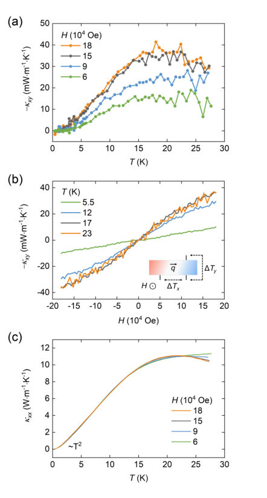
<figcaption class="paper-figure-caption"><b>Fig 1.</b> FIG. 1. Measured thermal conductivity tensor of LSNO-1/3. (a) Temperature dependence of the anti-symmetrized ther- mal Hall conductivity −κxy at various magnetic field, show- ing peak features at ∼20 K. (b) Linear or slightly sublinear magnetic-field dependence of −κxy at different temperatures. Inset shows a schematic of the THE experiment with a heat current q along the a-axis of LSNO-1/3 and a magnetic field H along the c-axis. (c) Temperature dependence of the lon- gitudinal thermal conductivity κxx at various magnetic field, following a T 2 power-law at low temperatures and exhibiting similar peak features as κxy.</figcaption>
</figure>
<figure class="paper-figure-card">
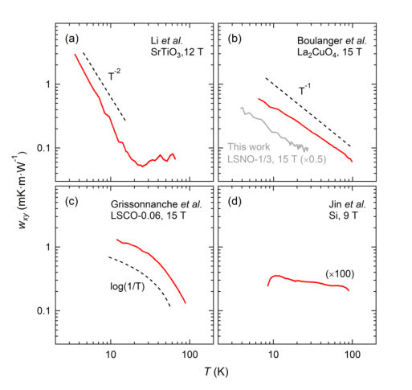
<figcaption class="paper-figure-caption"><b>Fig 2.</b> FIG. 3. Insulating-like temperature dependence of thermal Hall resistivity wxy = −κxy/κ2 xx at low temperatures of (a) SrTiO3 from Ref. [16] showing a T −2 divergence, (b) La2CuO4 from Ref. [17] showing a T −1 divergence similar to LSNO-1/3 in this work, (c) LSCO-0.06 from Ref. [15] showing a logarith- mic divergence, and (d) Silicon from Ref. [32] showing a weak negative temperature dependence. The wxy of silicon was cal- culated using κxx(H = 0) due to data availability; data was multiplied by 100 to facilitate the comparison with other ma- terials. All dashed lines are guides to the eye, indicating the respective divergence laws.</figcaption>
</figure>
<figure class="paper-figure-card">
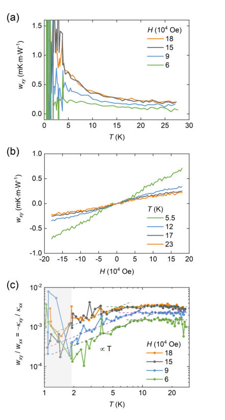
<figcaption class="paper-figure-caption"><b>Fig 3.</b> FIG. 2. Measured thermal Hall resistivity and thermal Hall angle of LSNO-1/3. (a) Temperature dependence of the anti- symmetrized thermal Hall resistance wxy at various mag- netic fields following a diverging T −1 power-law. (b) Linear magnetic-field dependence of wxy near H = 0 at different temperatures. (c) T-linear temperature dependence of the thermal Hall angle at low temperatures. These three phe- nomena can be found prevalently in other insulators showing phonon THE.</figcaption>
</figure>
</div>

<p><strong>Summary.</strong> This work investigates the phonon thermal Hall effect across various insulating materials, using $ ext{La}<em 1_3="1/3">{5/3}   ext{Sr}</em>_4$ as a primary example. By measuring the thermal Hall resistivity ($\omega_{xy}$), the authors establish that its characteristic temperature and field dependencies provide a unified description for this phenomenon in different Mott insulators.}   ext{NiO</p>
<p><strong>Why it may be interesting.</strong> While focused on thermal transport rather than quantum dynamics, the study probes collective excitations (phonons) in strongly correlated Mott insulators, which is a key area where lattice vibrations interact with electronic correlations.</p>
<details>
<summary>Detailed structure</summary>
<p><strong>Main problem.</strong> To establish a unifying description for the phonon thermal Hall effect (THE) observed across various insulating materials.</p>
<p><strong>Main result.</strong> The thermal Hall resistivity ($\omega_{xy}$) exhibits characteristic temperature and magnetic field dependencies ($T^{-1}$ divergence, linear $H$ dependence) that serve as a unifying signature for phonon THE in diverse insulators.</p>
<p><strong>Method.</strong> Experimental measurements using dedicated one-heater-three-thermometer setups to measure the full thermal resistivity tensor ($\mathbf{w}$) and calculate conductivities ($oldsymbol{\kappa}$).</p>
<p><strong>Model / system.</strong> The study focuses on doped Mott insulators, specifically $  ext{La}<em 1_3="1/3">{5/3}   ext{Sr}</em>_3$ and cuprates.}   ext{NiO}_4$, and compares results across other insulating systems like $    ext{SrTiO</p>
<p><strong>Key observables.</strong> Thermal Hall resistivity ($\omega_{xy}$), Thermal Hall angle ($  heta_{  ext{TH}}$), Longitudinal thermal conductivity ($\kappa_{xx}$), and specific heat ($C(T)$).</p>
<p><strong>Important parameters / regimes.</strong> Low temperatures (down to $\sim 2$ K), magnetic fields near $H=0$, and doping levels in Mott insulators.</p>
<p><strong>Assumptions / limitations.</strong> The analysis assumes an isotropic and field-antisymmetric thermal resistivity tensor ($\mathbf{w}$).</p>
<p><strong>Figures summary.</strong> Figures compare measured $\kappa_{xy}$ vs. $\omega_{xy}$, showing characteristic temperature divergences ($T^{-1}, T^{-2}$) for different materials, and illustrate the linear $H$ dependence of $\omega_{xy}$.</p>
<p><strong>Paper structure.</strong> The paper systematically presents measurements on $    ext{LSNO-1/3}$, analyzes its unique signatures ($\omega_{xy}(T)$, $\omega_{xy}(H)$), compares these findings to established data from other insulators (STO, LCO, Si), and concludes by proposing the unifying role of $\omega_{xy}$.</p>
</details>
<details>
<summary>Abstract</summary>
<p>A considerable phonon thermal Hall effect was recently discovered across a diverse collection of materials. To clarify this enigmatic thermal Hall response in various insulators, we investigate the doped Mott insulator La$_{5/3}$Sr$_{1/3}$NiO$_4$ as an example material system and reveal a characteristic phonon-dominated thermal Hall effect. As a sensitive probe of the transverse thermal response, the thermal Hall resistivity $w_{xy}$ exhibits an insulating-like temperature dependence $w_{xy}(T)$, a linear magnetic-field dependence $w_{xy}(H)$ near $H=0$, and a $T$-linear thermal Hall angle at low temperatures. The presence of similar phenomena across a series of insulators suggests that $w_{xy}$ serves as a unifying description of phonon thermal Hall effect, corroborated by an apparent correlation between the insulating-like $w_{xy}(T)$ and material's localized electronic state.</p>
</details>
<p><sub><a href="#top">↑ back to top</a></sub></p>

<p><a id="paper-2607.21551"></a></p>
<h3 id="unconditional-unclonable-encryption"><a href="http://arxiv.org/abs/2607.21551v1">Unconditional Unclonable Encryption</a></h3>
<p><strong>Authors:</strong> Prabhanjan Ananth, Amit Sahai<br>
<strong>Type:</strong> theory · <strong>Category:</strong> quantum information and computing · <strong>PDF:</strong> <a href="https://arxiv.org/pdf/2607.21551v1">https://arxiv.org/pdf/2607.21551v1</a><br>
<strong>Analysis basis:</strong> full PDF text, analyzed in chunks
<strong>Topic relevance:</strong> <code>entanglement &amp; information structure</code> <strong>1/5</strong> · <code>quantum measurements</code> <strong>1/5</strong></p>
<div class="figure-strip-hint">↔ Scroll figures horizontally</div>
<div class="paper-figures-scroll">
<figure class="paper-figure-card">
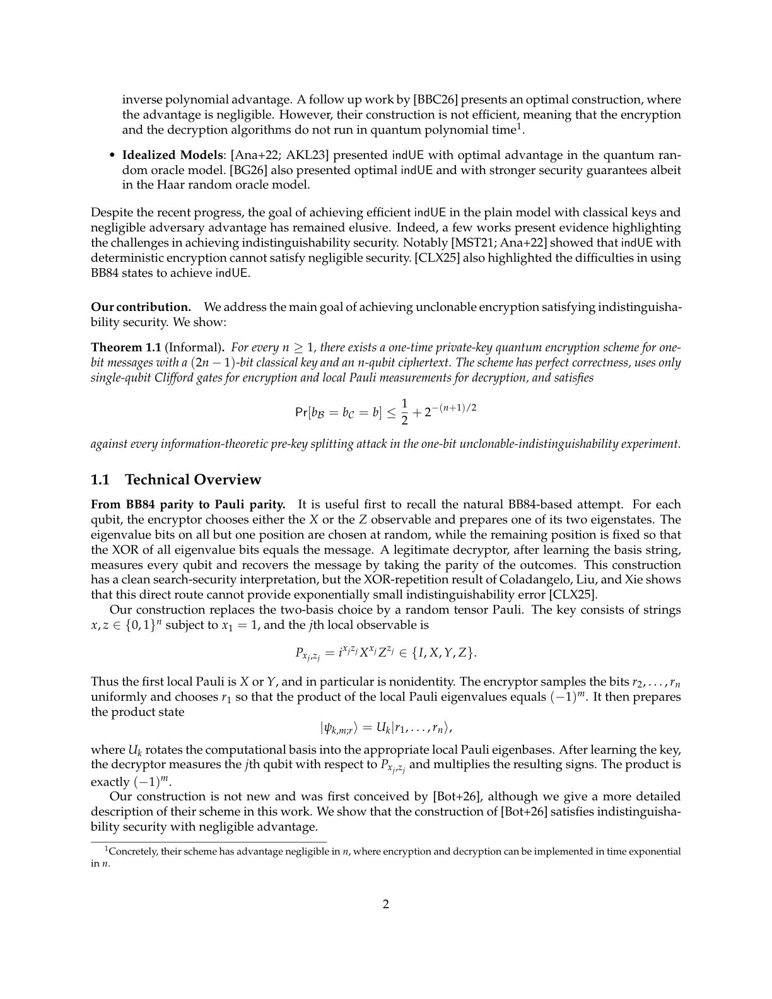
<figcaption class="paper-figure-caption"><b>Fig 1.</b> Low-resolution page preview, page 2</figcaption>
</figure>
<figure class="paper-figure-card">
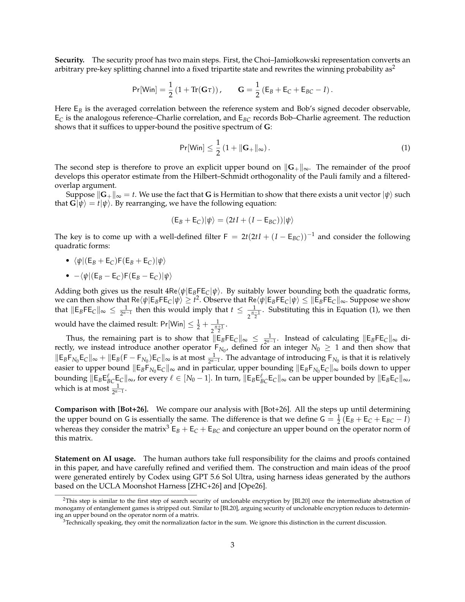
<figcaption class="paper-figure-caption"><b>Fig 2.</b> Low-resolution page preview, page 3</figcaption>
</figure>
<figure class="paper-figure-card">
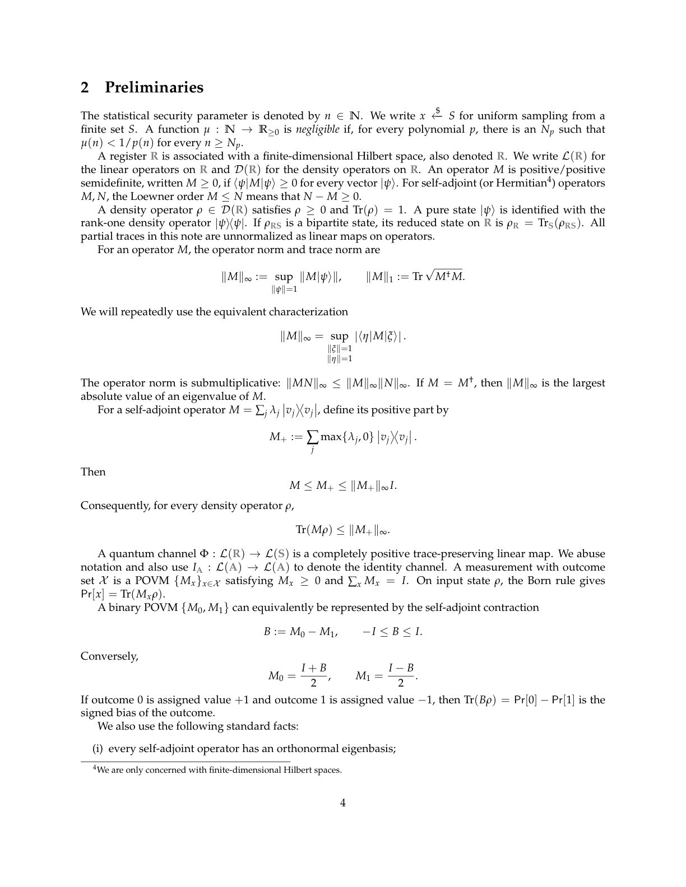
<figcaption class="paper-figure-caption"><b>Fig 3.</b> Low-resolution page preview, page 4</figcaption>
</figure>
<figure class="paper-figure-card">
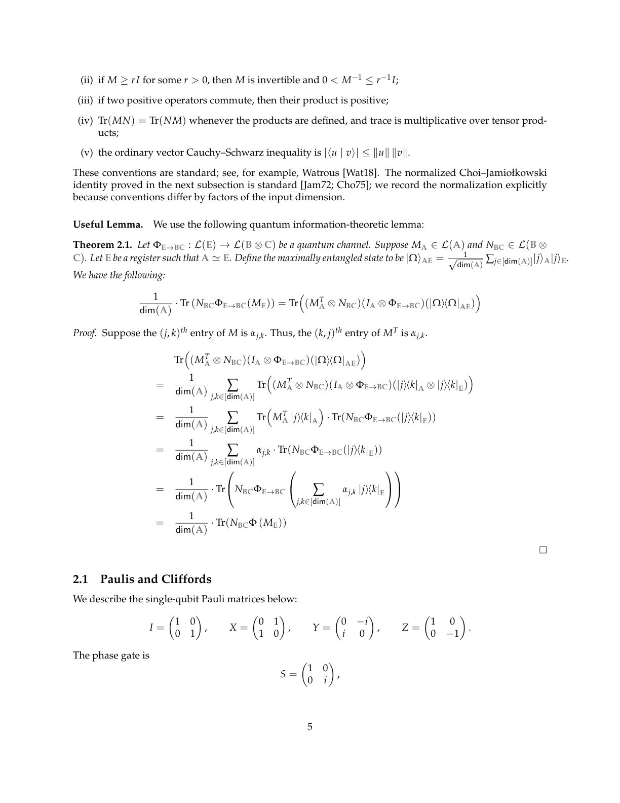
<figcaption class="paper-figure-caption"><b>Fig 4.</b> Low-resolution page preview, page 5</figcaption>
</figure>
<figure class="paper-figure-card">
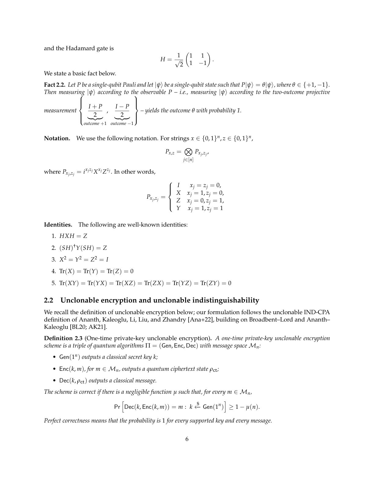
<figcaption class="paper-figure-caption"><b>Fig 5.</b> Low-resolution page preview, page 6</figcaption>
</figure>
</div>

<p><strong>Summary.</strong> This paper presents an unconditional construction for a one-time private-key unclonable encryption scheme for single bits. The authors rigorously prove its security by bounding the adversary's advantage using advanced techniques involving operator norms and spectral analysis within quantum information theory. It advances the field by providing tight, information-theoretic security guarantees for this cryptographic primitive.</p>
<p><strong>Why it may be interesting.</strong> This work provides a rigorous, information-theoretic security proof for a quantum primitive (UE) that is highly relevant to quantum communication protocols, building upon foundational concepts in quantum cryptography.</p>
<details>
<summary>Detailed structure</summary>
<p><strong>Main problem.</strong> The core problem is constructing an unconditionally secure, information-theoretically secure one-time private-key unclonable encryption (UE) scheme for single-bit messages.</p>
<p><strong>Main result.</strong> The authors provide a construction achieving an advantage bound of $   ext{Pr}[    ext{Win}] \le 1/2 + 2^{-(n+1)/2}$, demonstrating the security of the proposed quantum encryption protocol.</p>
<p><strong>Method.</strong> The proof involves advanced techniques from quantum information theory, utilizing Choi–Jamiołkowski representations and bounding operator norms ($\lVert G_+ 
Vert_\infty$) derived from analyzing the winning probability in an unclonable indistinguishability game.</p>
<p><strong>Model / system.</strong> The model is a quantum cryptographic scheme operating on one-bit messages using $n$-qubit ciphertexts and classical keys. Security relies fundamentally on the no-cloning principle applied to quantum states.</p>
<p><strong>Key observables.</strong> The success probability of an adversary ($ ext{Pr}[    ext{Win}]$) in the unclonable indistinguishability experiment, and related operator norms like $\lVert E_{BC} 
Vert_\infty$.</p>
<p><strong>Important parameters / regimes.</strong> The key length $n$ (determining the security parameter), and derived bounds such as $\gamma = d/L$.</p>
<p><strong>Assumptions / limitations.</strong> The proof relies on spectral decomposition, bounding quadratic forms using filter operators ($F$), and assuming specific algebraic properties of Pauli operators acting on tensor product Hilbert spaces.</p>
<p><strong>Paper structure.</strong> The paper progresses by defining the scheme, formulating the security game in terms of operator traces (Choi states), deriving bounds on correlation operators using lemmas (like Lemma 3.3), and finally applying spectral analysis with filter operators to achieve the tight final bound.</p>
</details>
<details>
<summary>Abstract</summary>
<p>We give an unconditional construction of information-theoretically secure one-time private-key unclonable encryption scheme for one-bit messages, with efficient encryption and decryption and exponentially small unclonable-indistinguishability advantage.</p>
</details>
<p><sub><a href="#top">↑ back to top</a></sub></p>

<p><a id="paper-2607.21524"></a></p>
<h3 id="unified-theory-of-classical-and-quantum-semiparametric-efficiency"><a href="http://arxiv.org/abs/2607.21524v1">Unified theory of classical and quantum semiparametric efficiency</a></h3>
<p><strong>Authors:</strong> Mankei Tsang<br>
<strong>Type:</strong> theory · <strong>Category:</strong> other · <strong>PDF:</strong> <a href="https://arxiv.org/pdf/2607.21524v1">https://arxiv.org/pdf/2607.21524v1</a><br>
<strong>Analysis basis:</strong> full PDF text, analyzed in chunks
<strong>Topic relevance:</strong> <code>entanglement &amp; information structure</code> <strong>1/5</strong> · <code>quantum measurements</code> <strong>1/5</strong></p>
<div class="figure-strip-hint">↔ Scroll figures horizontally</div>
<div class="paper-figures-scroll">
<figure class="paper-figure-card">
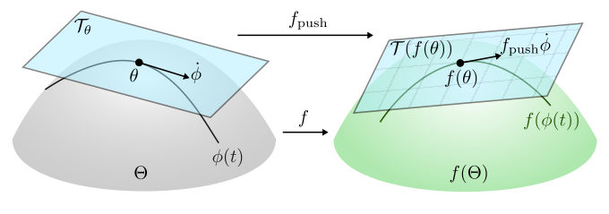
<figcaption class="paper-figure-caption"><b>Fig 1.</b> FIG. 1. Picture the parameter space Θ as a manifold. A curve ϕ(t) in Θ passes through the true parameter θ, and its tangent vector there is denoted as ˙ϕ. The tangent space Tθ is the set of tangent vectors of all curves. The parametrization function f maps the parameter to a key property of the statistical model, so that each curve ϕ(t) is mapped to a curve f(ϕ(t)) in the statistical manifold f(Θ) on the right. The pushforward fpush is the map of each tangent vector ˙ϕ to a score fpush ˙ϕ in the score tangent space T (f(θ)); the score can be pictured as a tangent vector of f(ϕ(t)). The grid on T (f(θ)) represents its inner product, which determines the length of a tangent vector as well as...</figcaption>
</figure>
<figure class="paper-figure-card">
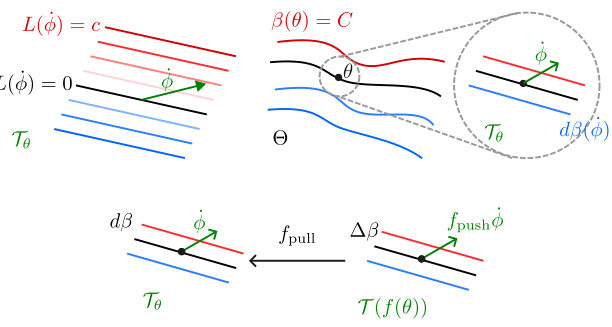
<figcaption class="paper-figure-caption"><b>Fig 2.</b> FIG. 2. Top left: a tangent covector L ∈T ∗ θ can be pictured as a meter that measures a tangent vector ˙ϕ ∈Tθ via the flat and parallel level sets L( ˙ϕ) = c, c ∈R. Top right: the differential dβ can be pictured as level sets on Tθ that are flat approximations of the global level sets of β(θ) on Θ. Bottom: a covector ∆β on T (f(θ)) can be pulled back to become a covector (fpull∆β)( ˙ϕ) = ∆β(fpush ˙ϕ) on Tθ. Eq. (2.48) requires the resulting covector to match the original differential dβ.</figcaption>
</figure>
<figure class="paper-figure-card">
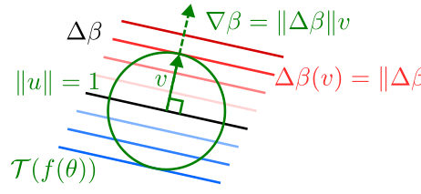
<figcaption class="paper-figure-caption"><b>Fig 3.</b> FIG. 3. Picture the covector ∆β as level sets on the score tangent space T (f(θ)). Consider the unit vectors on the unit sphere ∥u∥f(θ) = 1. The highest level ∆β(v) attained by a unit vector v is the operator norm ∥∆β∥. The Riesz representation ∇β of ∆β is this v times ∥∆β∥. ∇β is orthogonal to the ∆β(u) = 0 level set because ⟨∇β, u⟩f(θ) = ∆β(u) = 0.</figcaption>
</figure>
<figure class="paper-figure-card">
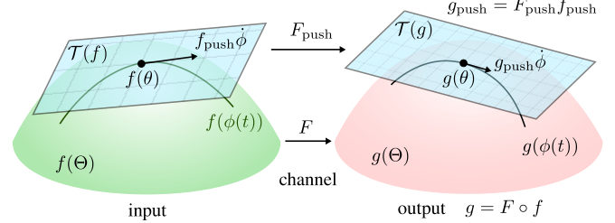
<figcaption class="paper-figure-caption"><b>Fig 4.</b> FIG. 4. The channel map F relates the input parametrization function f(θ) to the output parametrization function g(θ) by g = F ◦f. This map induces a linear channel pushforward map Fpush that relates each input score fpush ˙ϕ in the input score tangent space T (f) to the output score gpush ˙ϕ in the output score tangent space T (g) by gpush = Fpushfpush.</figcaption>
</figure>
<figure class="paper-figure-card">
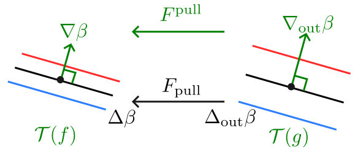
<figcaption class="paper-figure-caption"><b>Fig 5.</b> FIG. 5. The score differentials ∆β and ∆βout are depicted as level sets on the score tangent spaces T (f) and T (g), respectively. Eq. (4.26) requires Fpull applied to the output score differential ∆βout to match the input score differential ∆β. The efficient influences ∇β and ∇outβ are the Riesz representations of the score differentials and depicted as vectors orthogonal to the level sets. Eq. (4.30) requires the channel pullback F pull of the output efficient influence ∇outβ to match the input efficient influence ∇β.</figcaption>
</figure>
</div>

<p><strong>Summary.</strong> This paper introduces a unified geometric theory to calculate statistical efficiency bounds for estimating parameters when the underlying model is high-dimensional (semiparametric). By generalizing classical and quantum concepts like the Cramér-Rao and Helstrom bounds, it offers a powerful tool to determine fundamental limits on measurement precision in fields ranging from general sensing to advanced optical imaging.</p>
<p><strong>Why it may be interesting.</strong> It provides a powerful mathematical toolkit for quantifying ultimate measurement precision limits in scenarios where many parameters are unknown, which is crucial for advanced quantum sensing and metrology beyond simple parameter estimation.</p>
<details>
<summary>Detailed structure</summary>
<p><strong>Main problem.</strong> The paper aims to develop a unified statistical theory for efficiency bounds applicable to both classical and quantum semiparametric models.</p>
<p><strong>Main result.</strong> It provides a general framework that unifies the Cramér-Rao and Helstrom bounds, allowing computation of classical and quantum limits for complex estimation tasks like optical imaging.</p>
<p><strong>Method.</strong> The approach is highly abstract and geometric, defining concepts like the parameter tangent space and information semimetric to generalize existing statistical bounds beyond finite dimensions.</p>
<p><strong>Model / system.</strong> The theory is applied broadly, covering general classical and quantum models (Gaussian, Poisson fields) with specific applications in coherent and incoherent optical imaging problems.</p>
<p><strong>Key observables.</strong> Statistical efficiency bounds, the output efficient influence ($
abla_{  ext{out}}eta$), and classical/quantum limits to imaging resolution.</p>
<p><strong>Important parameters / regimes.</strong> High-dimensional unknown parameters ($  heta$) summarized by a finite-dimensional parameter of interest ($eta(    heta)$).</p>
<p><strong>Assumptions / limitations.</strong> The primary assumption is the need for minimal assumptions about high-dimensional parameters, and mathematically, it relies on differentiability and the existence/properties of certain operators like $F^{	ext{push}}$.</p>
<p><strong>Paper structure.</strong> The paper builds from fundamental abstract concepts (parameter tangent space, information semimetric) to specific applications in classical statistics (e.g., Gaussian fields), quantum estimation theory (Helstrom bounds), and finally applies the unified formalism to complex physical systems like optical imaging.</p>
</details>
<details>
<summary>Abstract</summary>
<p>In classical and quantum statistics, high-dimensional unknown parameters are abundant and it is often prudent to make minimal assumptions about them using so-called semiparametric models. To attack a wide range of semiparametric problems in one broad stroke, we present a unified treatment of statistical efficiency for classical and quantum semiparametric models, generalizing the Cramér-Rao and Helstrom bounds beyond finite-dimensional parameters. We introduce the fundamental concepts in abstract and geometric terms before applying them to many examples, covering general classical and quantum models as well as the paradigmatic special cases of Gaussian and Poisson fields. We give an in-depth treatment of channels in the semiparametric efficiency theory and advocate the use of the singular value decomposition to elucidate the statistical effects of channels. To demonstrate the utility of the formalism, we apply it to coherent and incoherent optical imaging problems, assuming an arbitrary field or intensity on the object plane without parametric assumptions. Our formalism enables us to compute classical and quantum limits to coherent and incoherent imaging resolution in statistical terms. For subdiffraction incoherent imaging, we demonstrate that spatial-mode demultiplexing can be far superior to direct imaging in estimating generalized Fourier coefficients and come closer to the quantum limits. We envision our theory becoming an essential tool for both classical and quantum statistics with useful applications to sensing and imaging, whenever minimal assumptions about a high-dimensional parameter should be made.</p>
</details>
<p><sub><a href="#top">↑ back to top</a></sub></p>

<p><a id="paper-2607.20624"></a></p>
<h3 id="ideal-bands-in-tight-binding-models"><a href="http://arxiv.org/abs/2607.20624v1">Ideal Bands in Tight-Binding Models</a></h3>
<p><strong>Authors:</strong> Lexu Zhao, Yang Ge, Shinsei Ryu, Jiabin Yu<br>
<strong>Type:</strong> theory · <strong>Category:</strong> other · <strong>PDF:</strong> <a href="https://arxiv.org/pdf/2607.20624v1">https://arxiv.org/pdf/2607.20624v1</a><br>
<strong>Analysis basis:</strong> full PDF text, analyzed in chunks
<strong>Topic relevance:</strong> <code>analog quantum simulation</code> <strong>1/5</strong></p>
<div class="figure-strip-hint">↔ Scroll figures horizontally</div>
<div class="paper-figures-scroll">
<figure class="paper-figure-card">
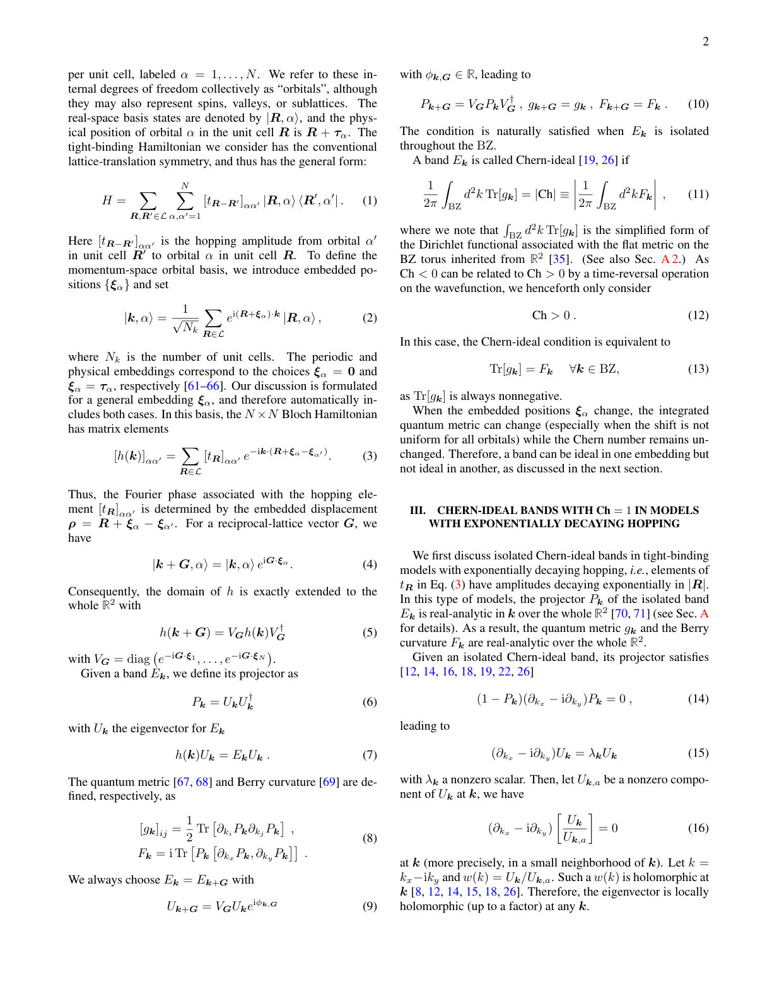
<figcaption class="paper-figure-caption"><b>Fig 1.</b> Low-resolution page preview, page 2</figcaption>
</figure>
<figure class="paper-figure-card">
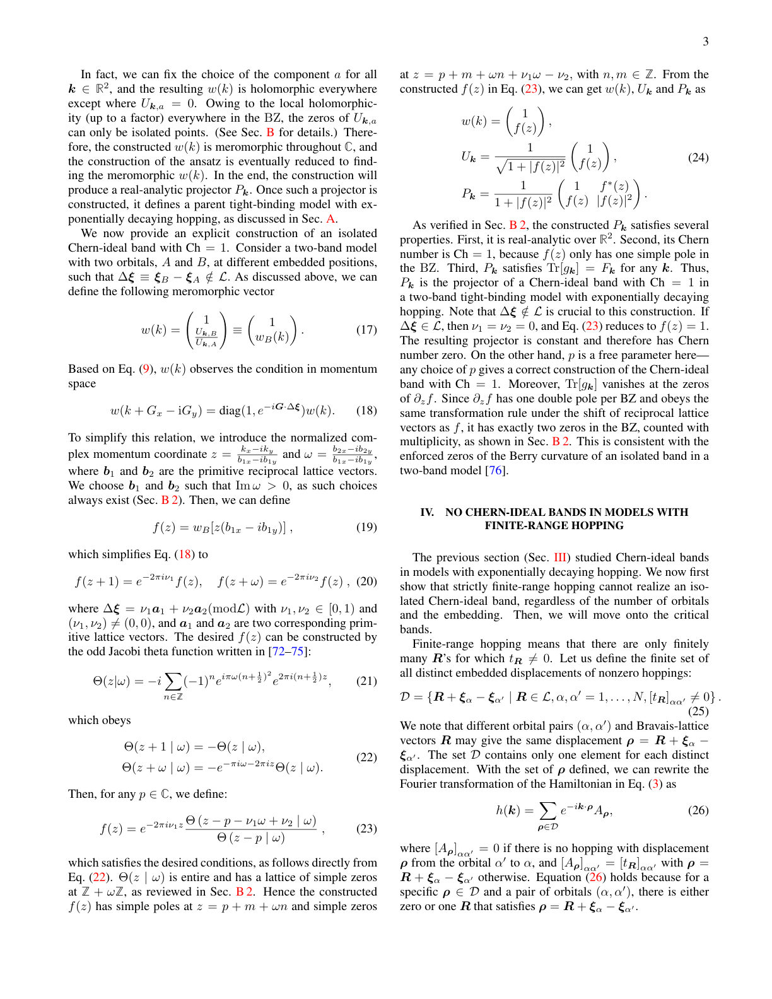
<figcaption class="paper-figure-caption"><b>Fig 2.</b> Low-resolution page preview, page 3</figcaption>
</figure>
<figure class="paper-figure-card">
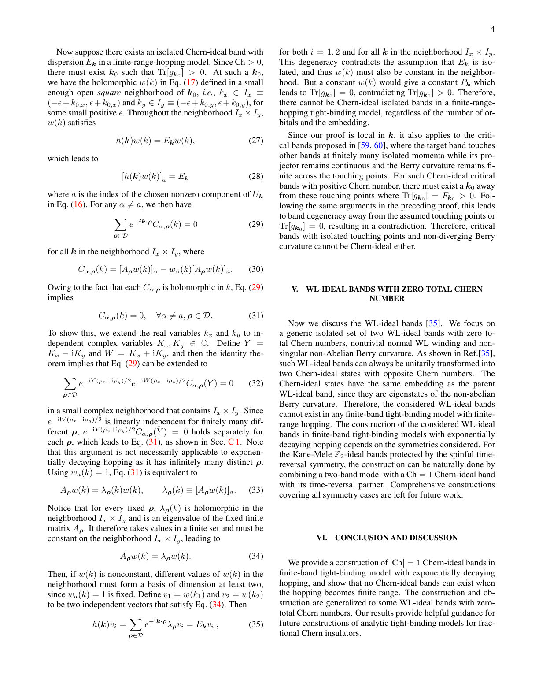
<figcaption class="paper-figure-caption"><b>Fig 3.</b> Low-resolution page preview, page 4</figcaption>
</figure>
<figure class="paper-figure-card">
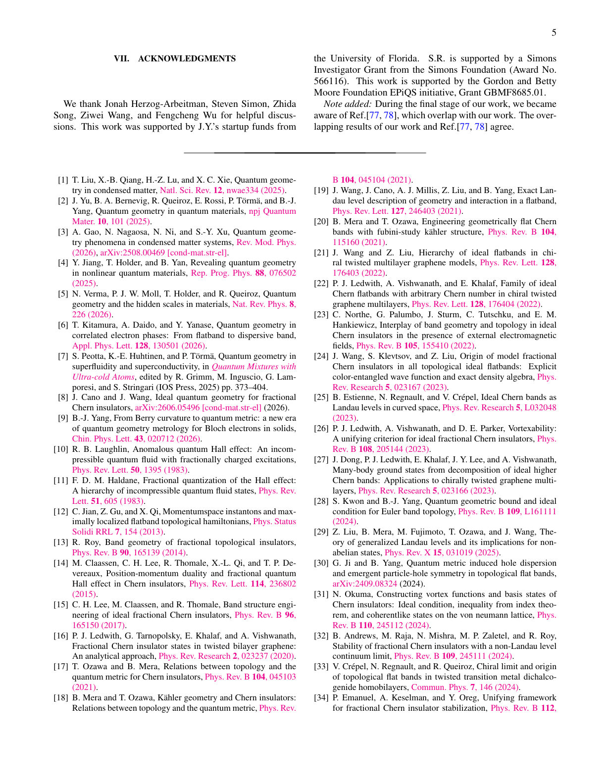
<figcaption class="paper-figure-caption"><b>Fig 4.</b> Low-resolution page preview, page 5</figcaption>
</figure>
<figure class="paper-figure-card">
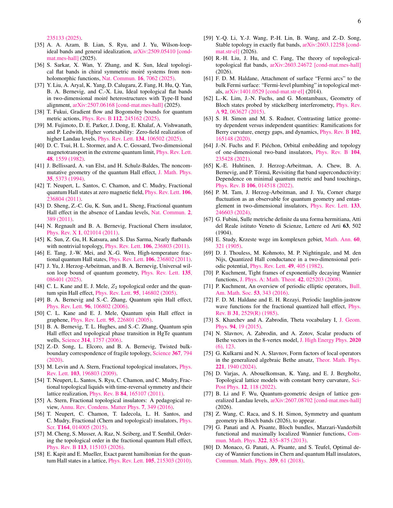
<figcaption class="paper-figure-caption"><b>Fig 5.</b> Low-resolution page preview, page 6</figcaption>
</figure>
</div>

<p><strong>Summary.</strong> This paper rigorously analyzes the concept of 'ideal bands' by examining when their associated topological functional saturates a theoretical lower bound. The authors provide an explicit construction for such bands under conditions of exponentially decaying hopping but prove that these ideal states are impossible to realize in models with only finite-range interactions. This establishes fundamental limitations on the topology achievable in lattice Hamiltonians.</p>
<p><strong>Why it may be interesting.</strong> The mathematical constraints derived from topological invariants like the Chern number place severe restrictions on the realizability of specific band structures in physical models, which is fundamental knowledge for designing topological materials.</p>
<details>
<summary>Detailed structure</summary>
<p><strong>Main problem.</strong> The study investigates 'ideal bands,' specifically Chern-ideal and Wilson-loop-ideal bands, defined by the saturation of a topological lower bound on their Dirichlet functional.</p>
<p><strong>Main result.</strong> The authors prove that isolated Chern-ideal bands with non-zero Chern number cannot exist in finite-band tight-binding models utilizing only finite-range hopping. This conclusion extends to critical and Wilson-loop-ideal bands under similar conditions.</p>
<p><strong>Method.</strong> The proof heavily relies on complex analysis, specifically using the identity theorem applied to functions derived from Bloch Hamiltonians defined over the Brillouin zone.</p>
<p><strong>Model / system.</strong> The system is a finite-band tight-binding model defined on a 2D Bravais lattice with conventional translation symmetries. The Hamiltonian structure is analyzed via its momentum-space representation, $h(\mathbf{k})$.</p>
<p><strong>Key observables.</strong> Chern number (Ch), Quantum metric ($\mathbf{g}_{\mathbf{k}}$), Berry curvature ($F_{\mathbf{k}}$), and the Dirichlet functional.</p>
<p><strong>Important parameters / regimes.</strong> The nature of hopping decay (exponentially decaying vs. finite-range) and the relative positions of embedded orbitals ($\Delta\xi$).</p>
<p><strong>Assumptions / limitations.</strong> Conventional lattice translation symmetry is assumed; the proof for non-existence relies on assuming $   ext{Ch} &gt; 0$ or that the Berry curvature does not diverge.</p>
<p><strong>Paper structure.</strong> The paper first provides an explicit construction of Chern-ideal bands with Ch=1 using exponentially decaying hopping. It then develops a rigorous proof, utilizing complex analysis techniques (like extending variables to $\mathbb{C}^2$), demonstrating that the requirement for non-zero Chern number leads to contradictions when restricted to finite-range hoppings.</p>
</details>
<details>
<summary>Abstract</summary>
<p>A band is called ideal when its Dirichlet functional saturates the topological lower bound. We study ideal bands in finite-band tight-binding models with conventional two-dimensional lattice translation symmetries, allowing the bands to have non-flat dispersion. We first provide an analytic construction of isolated Chern-ideal bands with Chern number $|\mathrm{Ch}|=1$ in finite-band models with exponentially decaying hopping. This construction applies only when at least two orbitals have different embedded positions (modulo lattice vectors), complementing the previously known construction for $|\mathrm{Ch}|>1$. We then show that isolated Chern-ideal bands with any nonzero Chern number cannot exist in finite-band models with finite-range hopping, regardless of the embedded orbital positions. The conclusion holds even if there are isolated band touching points, as long as the Berry curvature does not diverge anywhere in the Brillouin zone. We finally generalize the conclusions to Wilson-loop-ideal bands with zero total Chern number, such as Kane-Mele $\mathbb{Z}_2$-ideal bands.</p>
</details>
<p><sub><a href="#top">↑ back to top</a></sub></p>

<p><a id="paper-2607.21206"></a></p>
<h3 id="long-wavelength-density-response-and-momentum-resolution-in-strange-metal-charge-spectroscopy"><a href="http://arxiv.org/abs/2607.21206v1">Long-wavelength density response and momentum resolution in strange-metal charge spectroscopy</a></h3>
<p><strong>Authors:</strong> Ilmo Sung<br>
<strong>Type:</strong> theory · <strong>Category:</strong> strongly correlated electrons · <strong>PDF:</strong> <a href="https://arxiv.org/pdf/2607.21206v1">https://arxiv.org/pdf/2607.21206v1</a><br>
<strong>Analysis basis:</strong> full PDF text, analyzed in chunks
<strong>Topic relevance:</strong> <code>Keldysh / 2PI / non-Gaussian methods</code> <strong>1/5</strong></p>
<div class="figure-strip-hint">↔ Scroll figures horizontally</div>
<div class="paper-figures-scroll">
<figure class="paper-figure-card">
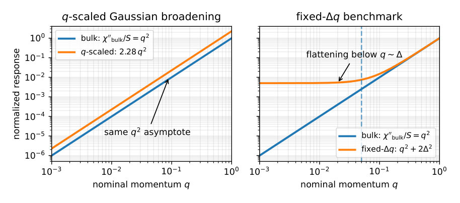
<figcaption class="paper-figure-caption"><b>Fig 1.</b> Figure 1: Illustration of the momentum-resolution theorem. Left: for a toy bulk law 𝜒′′ bulk/𝑆= 𝑞2, 𝑞-scaled Gaussian broadening with per-component width 𝜎𝑞preserves the same 𝑞2 asymptotic behavior and only rescales the prefactor. The plotted value is 𝜎= 0.8, giving 1 + 2𝜎2 = 2.28. Right: an illustrative fixed-Δ𝑞 Gaussian benchmark with per-component width Δ instead produces low-𝑞flattening below 𝑞∼Δ. The theorem applies to the left-hand class of models; the fixed-Δ𝑞comparison is heuristic.</figcaption>
</figure>
<figure class="paper-figure-card">
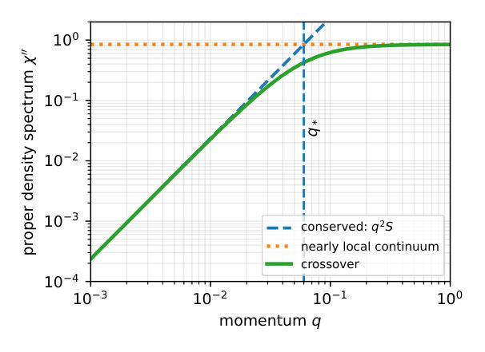
<figcaption class="paper-figure-caption"><b>Fig 2.</b> Figure 2: Schematic crossover implied by charge conservation. At fixed nonzero frequency and temperature, a homogeneous conserved metallic response must satisfy 𝜒′′ bulk ∼𝑞2𝑆(𝜔,𝑇) as 𝑞→0. A nearly local finite-𝑞 continuum can exist over an intermediate momentum window, but if it connects to the optical metal it must cross over at 𝑞∗(𝜔,𝑇).</figcaption>
</figure>
</div>

<p><strong>Summary.</strong> This work theoretically connects momentum-resolved EELS data with optical conductivity in strange metals by analyzing the underlying charge density response function. It proves that this bulk response must obey a universal $q^2$ scaling law as momentum transfer approaches zero. This constraint defines a crossover surface, offering a fundamental test for theories describing charge dynamics in high-temperature superconductors.</p>
<p><strong>Why it may be interesting.</strong> The rigorous mathematical constraint derived from fundamental symmetries (Ward identity) provides a powerful tool to test theoretical models of strongly correlated electron systems against disparate experimental measurements.</p>
<details>
<summary>Detailed structure</summary>
<p><strong>Main problem.</strong> The paper aims to reconcile discrepancies between charge dynamics measured by momentum-resolved EELS (finite momentum) and those from optical spectroscopy (local limit) in strange metals.</p>
<p><strong>Main result.</strong> It proves that the proper bulk density response function must exhibit a universal $q^2$ asymptotic suppression at fixed frequency, which constrains how finite-$q$ measurements relate to the local optical conductivity.</p>
<p><strong>Method.</strong> The analysis uses the Ward identity connecting the charge-density polarization ($\chi''_{
ho
ho}$) to the longitudinal conductivity ($\sigma_L$), and then proves this $q^2$ scaling holds for any non-negative, self-similar momentum-resolution kernel.</p>
<p><strong>Model / system.</strong> The study focuses on strange-metal cuprates like Bi-2212, treating the charge dynamics via the proper homogeneous bulk charge-density polarization function ($\chi''_{
ho
ho}$).</p>
<p><strong>Key observables.</strong> Proper longitudinal charge-density polarization $\chi''_{
ho
ho}(q, \omega)$, local conductivity $\sigma_L(\omega)$, and the resulting crossover surface $q^*(\omega, T)$.</p>
<p><strong>Important parameters / regimes.</strong> Momentum transfer ($q$), frequency ($\omega$), temperature ($T$), and the ratio of momentum-resolution kernel width to nominal momentum.</p>
<p><strong>Assumptions / limitations.</strong> The analysis assumes the system is a homogeneous, U(1)-conserving metal, and that the measured quantity can be related back to the proper bulk response via electrodynamic conversion.</p>
<p><strong>Figures summary.</strong> Not specified in the notes; the focus is on deriving functional relationships (Eq. 6, Eq. 8) and proving asymptotic theorems.</p>
<p><strong>Paper structure.</strong> The paper establishes the Ward identity linking $\chi''_{
ho
ho}$ to $\sigma_L$, derives the required $q^2$ asymptotic behavior for the bulk response, proves this scaling is robust against realistic momentum-resolution kernels, and concludes by defining the crossover surface connecting different measurement regimes.</p>
</details>
<details>
<summary>Abstract</summary>
<p>Momentum-resolved electron energy-loss spectroscopy (EELS) on strange-metal Bi$_2$Sr$_2$CaCu$_2$O$_{8+x}$ (Bi-2212) observes a broad charge continuum that is nearly momentum independent over an extended finite-momentum regime, whereas optical spectroscopy determines a metallic local conductivity. We analyze the long-wavelength response function that connects these regimes: the proper homogeneous bulk charge-density polarization. For any homogeneous $U(1)$-conserving metal whose longitudinal matter conductivity remains finite in the $q\to0$ limit at fixed nonzero frequency, the Ward identity gives $χ''_{ρρ}({\bf q},ω)=q^2\operatorname{Re}σ_L({\bf q},ω)/ω$. We then prove that any nonnegative normalized momentum-resolution kernel with a self-similar $q$-scaled profile, uniformly bounded second moment, and tight second-moment tails preserves this $q^2$ asymptotic behavior, changing only the prefactor. Consequently, a nearly local finite-$q$ continuum in Bi-2212, if continuously connected to a regular metallic optical limit of the same proper bulk response, is naturally described by a crossover surface $q_\ast(ω,T)$. The theorem is a constraint on the proper bulk density response, or on a positive $q$-scaled convolution of it; screened loss functions and surface EELS observables require the corresponding electrodynamic conversion before the constraint is applied.</p>
</details>
<p><sub><a href="#top">↑ back to top</a></sub></p>

<p><a id="paper-2607.21411"></a></p>
<h3 id="qstar-quantum-selective-transfer-with-adaptive-routing"><a href="http://arxiv.org/abs/2607.21411v1">QSTAR: Quantum Selective Transfer with Adaptive Routing</a></h3>
<p><strong>Authors:</strong> Saim Rehman, Nouhaila Innan, Muhammad Shafique<br>
<strong>Type:</strong> theory · <strong>Category:</strong> disordered systems and neural networks · <strong>PDF:</strong> <a href="https://arxiv.org/pdf/2607.21411v1">https://arxiv.org/pdf/2607.21411v1</a><br>
<strong>Analysis basis:</strong> full PDF text, analyzed in chunks
<strong>Topic relevance:</strong> <code>methods for driven-dissipative</code> <strong>1/5</strong></p>
<div class="figure-strip-hint">↔ Scroll figures horizontally</div>
<div class="paper-figures-scroll">
<figure class="paper-figure-card">
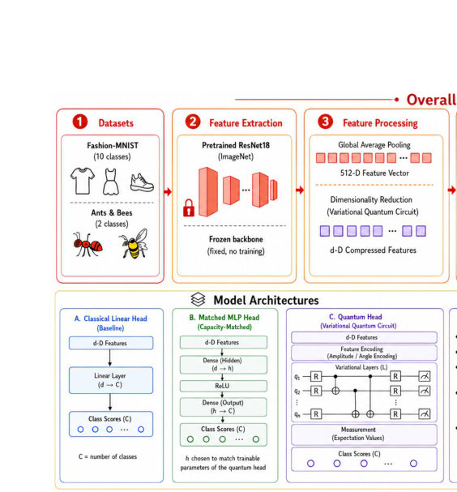
<figcaption class="paper-figure-caption"><b>Fig 1.</b> Fig. 1: Overview of the proposed QSTAR methodology.</figcaption>
</figure>
</div>

<p><strong>Summary.</strong> This paper introduces QSTAR, a selective framework for Quantum Transfer Learning that routes samples to a quantum circuit head only if the initial classical prediction is low-confidence. The results demonstrate that this targeted approach significantly boosts accuracy by leveraging quantum computation where it is most needed, suggesting quantum heads are best used as specialized fallback tools rather than general replacements.</p>
<p><strong>Why it may be interesting.</strong> While focused on machine learning, the concept of selectively engaging complex physical models (like quantum circuits) only when classical methods fail or are uncertain mirrors concepts in open quantum systems where specific environmental coupling or measurement protocols are only applied under certain conditions.</p>
<details>
<summary>Detailed structure</summary>
<p><strong>Main problem.</strong> The evaluation of Quantum Transfer Learning (QTL) often incorrectly assumes the quantum head replaces the classical classifier, obscuring when the quantum component is genuinely useful.</p>
<p><strong>Main result.</strong> Selective routing, which only passes low-confidence samples to a quantum fallback branch, significantly improves performance over standard QTL methods and outperforms adaptive classical baselines.</p>
<p><strong>Method.</strong> The authors propose QSTAR, a selective framework that uses sample confidence scores ($  au$) to route inputs: high-confidence data stays with the classical prediction, while uncertain data is passed to a parameterized quantum circuit head.</p>
<p><strong>Model / system.</strong> The model utilizes a frozen ResNet18 backbone for feature extraction on Fashion-MNIST. The classification involves comparing linear classical heads, MLP fallbacks, and various architecture-searched quantum circuits (KetGPT-designed heads).</p>
<p><strong>Key observables.</strong> Accuracy ($    ext{Acc.}$), F1-score, and the performance improvement of the quantum branch specifically on low-confidence samples.</p>
<p><strong>Important parameters / regimes.</strong> The confidence threshold $  au$ used for adaptive routing; circuit parameters (e.g., 10 parameters, 9 gates) in ablation studies.</p>
<p><strong>Assumptions / limitations.</strong> The primary assumption is that the utility of quantum heads is conditional on input uncertainty rather than being a universal replacement for classical methods.</p>
<p><strong>Figures summary.</strong> Figure 1 illustrates the QSTAR methodology. Table I compares fixed-head transfer learning results, and Table II shows adaptive routing performance across different confidence thresholds ($   au$).</p>
<p><strong>Paper structure.</strong> The paper introduces the limitation of standard QTL evaluation, proposes the selective QSTAR framework using adaptive routing based on sample confidence, presents quantitative comparisons against various baselines (classical/quantum heads), and concludes by arguing for the role of quantum circuits as targeted fallback mechanisms.</p>
</details>
<details>
<summary>Abstract</summary>
<p>Quantum transfer learning (QTL) is often evaluated by replacing a classical classifier with a fixed variational quantum head, but this hides a key question: when is the quantum branch actually useful? We propose QSTAR: Quantum Selective Transfer with Adaptive Routing, a selective QTL framework that keeps high-confidence classical predictions and routes only low-confidence samples to a fallback branch. Using a frozen ResNet18 backbone on Fashion-MNIST, we compare manually designed QTL heads, KetGPT-designed quantum heads, and parameter-matched classical baselines under a common data split and optimization schedule. Standard QTL heads reach at most 57.0% accuracy, while the strongest KetGPT head in the main filtered sweep reaches 78.5% accuracy and 0.785 F1-score. Although the strongest fixed classical head remains higher at 81.6%, selective routing gives the quantum branch a clearer role. On low-confidence samples, KetGPT #180 improves accuracy over a parameter-matched MLP fallback by 6.82, 4.31, and 3.03 percentage points at thresholds of 0.70, 0.80, and 0.90. At the full-system level, Adaptive KetGPT-QTL reaches 80.9% accuracy and 0.807 F1-score, outperforming the adaptive classical baseline. A separate compact-circuit ablation identifies KetGPT #160 as a stronger fixed-head candidate, reaching 81.9% accuracy with only 10 quantum parameters and 9 gates. These results suggest that architecture-searched quantum heads are most useful as targeted fallback branches for uncertain inputs rather than uniform replacements for classical classifiers.</p>
</details>
<p><sub><a href="#top">↑ back to top</a></sub></p>

<p><a id="paper-2607.21463"></a></p>
<h3 id="relational-path-integral-effective-actions-and-quantum-frame-covariance"><a href="http://arxiv.org/abs/2607.21463v1">Relational path integral, effective actions and quantum frame covariance</a></h3>
<p><strong>Authors:</strong> Sergio E. Aguilar-Gutierrez, Renata Ferrero, Philipp A. Hoehn, Luca Marchetti<br>
<strong>Type:</strong> theory · <strong>Category:</strong> other · <strong>PDF:</strong> <a href="https://arxiv.org/pdf/2607.21463v1">https://arxiv.org/pdf/2607.21463v1</a><br>
<strong>Analysis basis:</strong> full PDF text, analyzed in chunks
<strong>Topic relevance:</strong> <code>Keldysh / 2PI / non-Gaussian methods</code> <strong>1/5</strong></p>
<div class="figure-strip-hint">↔ Scroll figures horizontally</div>
<div class="paper-figures-scroll">
<figure class="paper-figure-card">
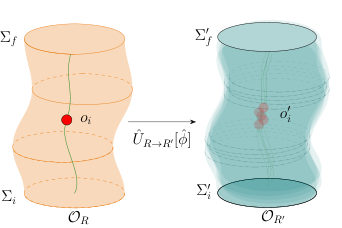
<figcaption class="paper-figure-caption"><b>Fig 1.</b> FIG. 1. A sharply localized event oi (red) in a foliation between two Cauchy slices Σi,f in OR (left) corresponds to a ‘fuzzy’ (field-dependent) event o′ i in a ‘fuzzy’ foliation between sharp slices Σ′ i,f in OR′ (right).</figcaption>
</figure>
<figure class="paper-figure-card">
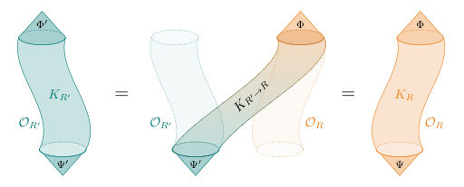
<figcaption class="paper-figure-caption"><b>Fig 2.</b> FIG. 2. KR→R′ links transition amplitudes and inner prod- ucts in distinct frame perspectives [138].</figcaption>
</figure>
<figure class="paper-figure-card">
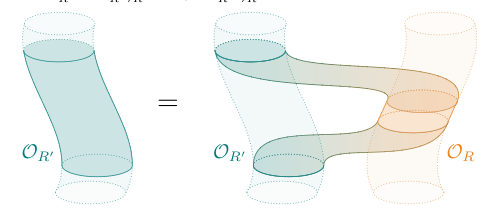
<figcaption class="paper-figure-caption"><b>Fig 3.</b> FIG. 3. ‘Bending’ the evolution kernel from R′- to R- spacetime links distinct relational time evolutions [138]. Thus, frame change and evolution kernels are compatible.</figcaption>
</figure>
<figure class="paper-figure-card">
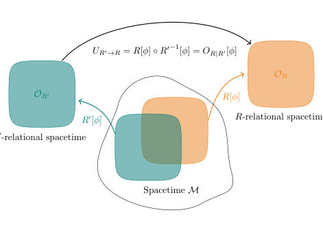
<figcaption class="paper-figure-caption"><b>Fig 4.</b> FIG. 4. Changes of dynamical frame in gravity are field- dependent coordinate transformations from one relational spacetime to another and given by the relational observable OR|R′[ϕ] describing the new frame relative to the old one.</figcaption>
</figure>
<figure class="paper-figure-card">
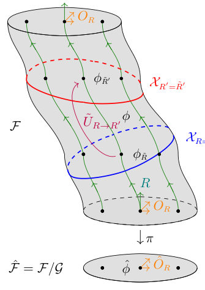
<figcaption class="paper-figure-caption"><b>Fig 5.</b> FIG. 5. Pictorial summary of the field space bundle F underlying our construction of the relational path integral. Green curves depict the fibers, i.e. gauge orbits of the small diffeomorphism gauge group G. Field configurations ϕ ∈F correspond to the entire history of the dynamical fields on spacetime M. Field configurations in the base space of orbits ˆF are gauge equivalence classes of histories (entire fibers) and denoted by ˆϕ. Each atlas of frame fields (cf. App. D) defines a family of local sections X ˜ R (red and blue circles) in F, determined by fixing the frame fields R into orientation ˜R. Each such atlas also determines a horizontal connection, defining vertical (tangen- tial to...</figcaption>
</figure>
</div>

<p><strong>Summary.</strong> This paper proposes a novel, gauge-invariant path integral formulation for quantum gravity by introducing Quantum Reference Frames (QRFs). By formulating physics using 'relational observables,' it achieves manifest gauge invariance without explicit gauge fixing. The key finding is that physical measurements become frame-dependent—localizing an event in one reference frame makes it appear 'fuzzy' when viewed from another.</p>
<p><strong>Why it may be interesting.</strong> While focused on quantum gravity, the core concept of describing physical quantities relative to internal, dynamical reference frames (QRFs) shares conceptual parallels with developing gauge-invariant descriptions in open quantum systems or time evolution when the background geometry itself is fluctuating or ill-defined.</p>
<details>
<summary>Detailed structure</summary>
<p><strong>Main problem.</strong> The primary goal is formulating a manifestly gauge-invariant path integral for quantum gravity that resolves issues arising from diffeomorphism invariance.</p>
<p><strong>Main result.</strong> The authors propose a relational path integral formulation using Quantum Reference Frames (QRFs) which yields an anomaly-free, gauge-invariant description of gravity.</p>
<p><strong>Method.</strong> They develop the formalism by constructing the path integral in terms of 'relational' or frame-dressed observables, bypassing explicit gauge fixing procedures.</p>
<p><strong>Model / system.</strong> The system is Quantum Gravity, specifically addressing the gravitational path integral. The approach centers on defining physics relative to internal, dynamical reference frames (QRFs) rather than fixed background coordinates.</p>
<p><strong>Key observables.</strong> Relational observables ($\hat{O}^A_R$), the relational effective action ($\Gamma_R$), and frame-change kernels ($K_{R 	o R'}$).</p>
<p><strong>Important parameters / regimes.</strong> The formulation is characterized by its covariance under arbitrary QRF changes, leading to 'fuzziness' in local correlators when changing perspectives.</p>
<p><strong>Assumptions / limitations.</strong> The construction proceeds at a non-perturbative level of quantum gravity, and while gauge invariance is achieved, the relationship between dynamics across different frames requires specialized kernels.</p>
<p><strong>Figures summary.</strong> Figure 1 conceptually illustrates the difference between sharply localized events in one foliation versus 'fuzzy' (field-dependent) events when viewed from another QRF perspective.</p>
<p><strong>Paper structure.</strong> The paper introduces the problem of gauge invariance in gravity, proposes the relational bundle-geometric formulation using QRFs and relational observables, derives the path integral structure, discusses the implications for vacuum states and correlators (fuzziness), and concludes by defining frame-dependent effective actions for renormalization.</p>
</details>
<details>
<summary>Abstract</summary>
<p>We propose a relational bundle-geometric formulation of the gravitational path integral by invoking the new tool of quantum reference frames (QRFs), which in gravity are gauge-covariant coordinate systems constructed from the available field content. Formulated in terms of relational (frame-dressed) observables, this yields a manifestly gauge-invariant path integral without ghosts and anomalies, and in which observables and their correlators are local to a frame. While eliminating the need for gauge fixing, it is equivalent to Faddeev-Popov versions in which the QRF is gauge-fixed, recovering certain previous proposals. A key feature is its covariance under QRF changes: it is a perspective-neutral path integral which encodes all internal QRF perspectives and the transformations between them. This leads to several qualitative predictions: local correlators and time evolution of relational observables in one QRF perspective become fuzzy in another, and a new spectrum of relational vacua arises. Comprised of frame-dependent no-boundary and asymptotic ground states, a vacuum from one perspective appears generally excited in another. Finally, we construct gauge-invariant, yet frame-dependent effective actions by coupling sources exclusively to relational observables, setting the stage for a relational definition of renormalization.</p>
</details>
<p><sub><a href="#top">↑ back to top</a></sub></p>

<p><a id="paper-2607.21266"></a></p>
<h3 id="representation-of-the-causal-logic-for-the-dirac-system-and-the-electron"><a href="http://arxiv.org/abs/2607.21266v1">Representation of the causal logic for the Dirac system and the electron</a></h3>
<p><strong>Authors:</strong> Domenico P. L. Castrigiano, Carmine De Rosa, Valter Moretti<br>
<strong>Type:</strong> theory · <strong>Category:</strong> other · <strong>PDF:</strong> <a href="https://arxiv.org/pdf/2607.21266v1">https://arxiv.org/pdf/2607.21266v1</a><br>
<strong>Analysis basis:</strong> full PDF text, analyzed in chunks
<strong>Topic relevance:</strong> <code>quantum measurements</code> <strong>1/5</strong></p>
<div class="figure-strip-hint">↔ Scroll figures horizontally</div>
<div class="paper-figures-scroll">
<figure class="paper-figure-card">
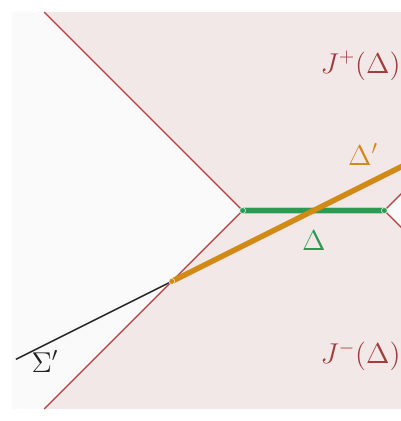
<figcaption class="paper-figure-caption"><b>Fig 1.</b> Figure 1: The achronal region ∆⊂Σ and its region of influence ∆′ = Σ′ ∩(J+(∆) ∪ J−(∆)) on the causal base Σ′. Here J±(∆) := {x+z : x ∈∆, z nonspacelike , ±z0 ≥0}.</figcaption>
</figure>
</div>

<p><strong>Summary.</strong> This paper develops a mathematically rigorous framework to define particle localization for the Dirac electron that strictly adheres to principles of relativistic causality. It constructs a covariant causal-logic representation by analyzing conserved probability currents and establishing connections between different mathematical definitions of localization. The work is significant for providing a consistent, projection-valued observable in relativistic quantum mechanics.</p>
<p><strong>Why it may be interesting.</strong> While highly technical, the rigorous treatment of relativistic causality constraints on position measurement is fundamental to understanding quantum field theory observables beyond standard QFT formalism.</p>
<details>
<summary>Detailed structure</summary>
<p><strong>Main problem.</strong> The central problem is constructing a covariant, causality-respecting localization observable for relativistic quantum particles like the Dirac electron.</p>
<p><strong>Main result.</strong> The authors construct a Representation of the Causal Logic (RCL) that provides a projection-valued measure satisfying microscopic causality and correctly reproduces known results in specific limits.</p>
<p><strong>Method.</strong> The methodology involves defining achronal localization via conserved probability currents, utilizing non-stationary phase arguments, and establishing mathematical correspondences between different types of localization operators (AL $\iff$ RCL).</p>
<p><strong>Model / system.</strong> The primary system is the Dirac equation describing relativistic fermions (the electron), analyzed in both full spacetime regions and restricted to the positive-energy subspace. The underlying mathematics involves Lorentzian geometry and causal set theory.</p>
<p><strong>Key observables.</strong> Covariant achronal localization operators ($T(\Delta)$ or $F(\Delta\wedge)$), the position operator, and the conserved Dirac probability current.</p>
<p><strong>Important parameters / regimes.</strong> The high-boost limit (Lorentz contraction) and the structure of achronal regions ($\Lambda$) defined by Lipschitz continuity are key parameters analyzed.</p>
<p><strong>Assumptions / limitations.</strong> The construction relies on extending measures from local intersections to full $\sigma$-additive extensions, assuming certain decay estimates hold for the probability current.</p>
<p><strong>Paper structure.</strong> The paper builds logically by first defining the mathematical framework of achronal sets and their associated projection operators (using geometric measure theory), then applying this machinery to construct the covariant localization observable for the Dirac system, and finally analyzing its properties in various limits.</p>
</details>
<details>
<summary>Abstract</summary>
<p>We construct a covariant representation of the causal logic for the Dirac system and the electron, based on the conserved Dirac probability current and a general current-to-localization procedure for achronal regions. A polynomial decay estimate, derived by a non-stationary phase argument, verifies the conditions required to define covariant achronal localization for the full Dirac system. Extending this localization to complete spacetime regions yields the corresponding causal-logic representation; restriction to the positive-energy invariant subspace gives the analogous construction for the electron. We establish several structural properties. On Euclidean space, Dirac localization agrees with canonical projection-valued localization, while its position operator differs from the Newton--Wigner operator by an explicitly determined bounded self-adjoint correction. Full Dirac achronal localization is projection valued and represents achronal separateness by orthogonality, thus satisfying microscopic causality. After compression to the electron subspace, it becomes positive-operator valued while preserving causality. We further extend known results from spatial to general achronal regions, prove separation and norm-one criteria, and analyze the high-boost limit, obtaining Lorentz contraction in a precise probabilistic sense. Finally, we discuss the electron--positron decomposition and the state transformation induced by position measurements, showing that measurement-induced positron production is universal and independent of the specific measuring device.</p>
</details>
<p><sub><a href="#top">↑ back to top</a></sub></p>

<p><a id="paper-2607.20906"></a></p>
<h3 id="uni-xas-alignment-driven-bidirectional-multimodal-learning-for-x-ray-absorption-spectroscopy"><a href="http://arxiv.org/abs/2607.20906v1">Uni-XAS: Alignment-Driven Bidirectional Multimodal Learning for X-ray Absorption Spectroscopy</a></h3>
<p><strong>Authors:</strong> Suyang Zhong, Yuhao Zhao, Boying Huang, Fanjie Xu, Pengwei Xu, Haoyi Tao, Xi Fang, Jun Cheng, Fujie Tang<br>
<strong>Type:</strong> both · <strong>Category:</strong> disordered systems and neural networks · <strong>PDF:</strong> <a href="https://arxiv.org/pdf/2607.20906v1">https://arxiv.org/pdf/2607.20906v1</a><br>
<strong>Analysis basis:</strong> full PDF text, analyzed in chunks
<strong>Topic relevance:</strong> <code>methods for driven-dissipative</code> <strong>1/5</strong></p>
<div class="figure-strip-hint">↔ Scroll figures horizontally</div>
<div class="paper-figures-scroll">
<figure class="paper-figure-card">
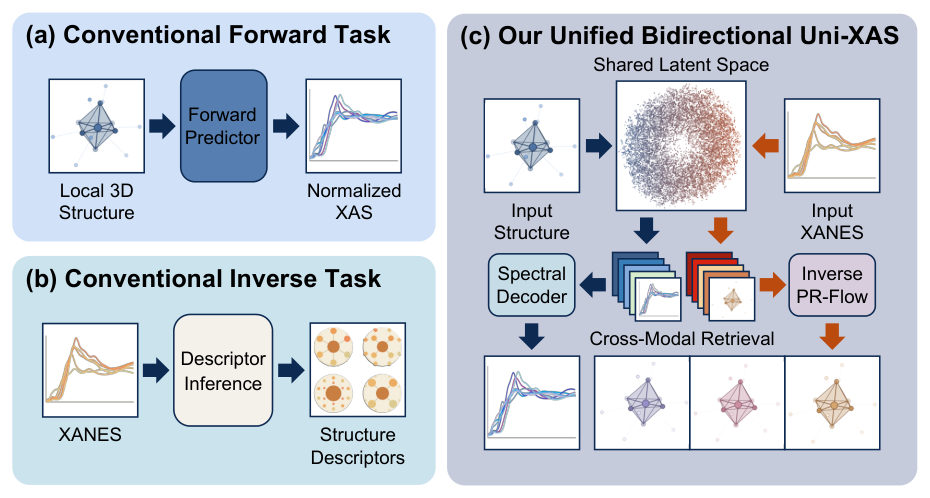
<figcaption class="paper-figure-caption"><b>Fig 1.</b> Figure 1: Comparison of XAS modeling pipelines. (a) Forward surrogate prediction. (b) Descriptor-level inverse interpretation. (c) Uni-XAS establishes a shared latent interface supporting cross-modal retrieval, retrieval-augmented forward prediction, and conditional 3D local-structure generation.</figcaption>
</figure>
<figure class="paper-figure-card">
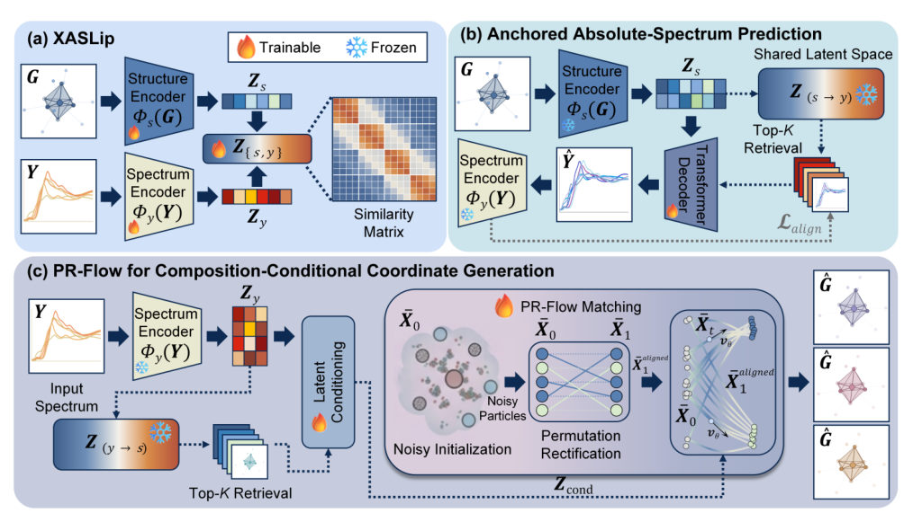
<figcaption class="paper-figure-caption"><b>Fig 2.</b> Figure 2: Uni-XAS architecture based on a Shared Latent Space (Z). (a) XASLip Alignment: Encoders map 3D structures and 1D spectra to shared embeddings (Zs, Zy) via an absorber-aware objective. (b) Absolute-Spectrum Prediction: Query Zs retrieves spectral priors (Z) from the frozen space to augment decoding, regularized by a Latent Consistency Constraint (Lalign). (c) PR-Flow Inverse Generation: Type-wise optimal transport assigns initial noise (X0) to identical atoms to resolve permutation ambiguity. Flow trajectory (Xt) is optimized toward the aligned target (Xaligned 1 ) under retrieved structural conditioning.</figcaption>
</figure>
<figure class="paper-figure-card">
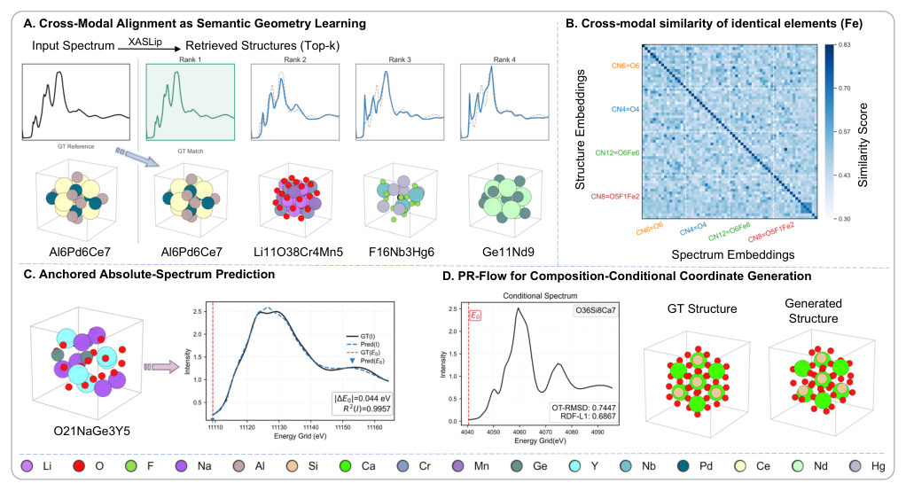
<figcaption class="paper-figure-caption"><b>Fig 3.</b> Figure 3: Qualitative results of Uni-XAS. The shared latent space effectively aligns modalities to retrieve structurally consistent 3D geometries from spectral queries (A), and resolves distinct intra-element coordination numbers within the learned manifold (B). This unified interface enables accurate forward absolute-spectrum prediction (C) and high-fidelity inverse composition-conditional generation (D). Grey boxes denote absorber-centered local crops rather than periodic unit cells.</figcaption>
</figure>
<figure class="paper-figure-card">
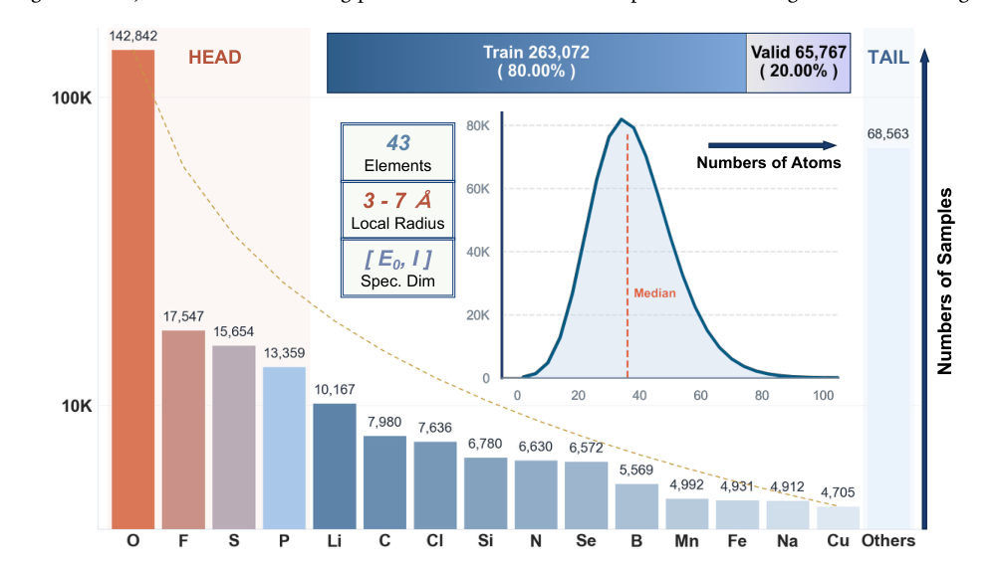
<figcaption class="paper-figure-caption"><b>Fig 4.</b> Figure 4: Statistics of the curated paired benchmark, detailing overall dataset scale, absorber distribution, and local- graph-size variability.</figcaption>
</figure>
<figure class="paper-figure-card">
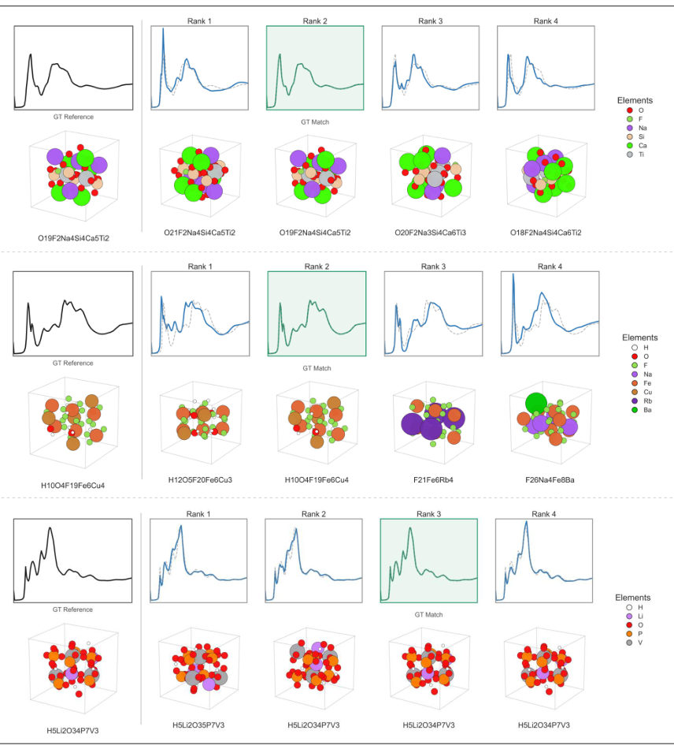
<figcaption class="paper-figure-caption"><b>Fig 5.</b> Figure 5: Extended qualitative examples of spectrum-to-structure retrieval across diverse absorbing elements. For each case, the input is a query spectrum (top-left). The remaining panels in the top row show the spectra associated with the retrieved candidate structures, ranked by similarity in the latent space. The bottom row visualizes the corresponding local structures: the ground-truth structure of the query (bottom-left) and the retrieved candidate structures (right). Green bounding boxes indicate the correct match among the ranked results. Note that the spectra in the top row (except the query) are not model predictions, but are shown for visualization to illustrate...</figcaption>
</figure>
</div>

<p><strong>Summary.</strong> This paper introduces Uni-XAS, a unified machine learning framework designed to solve the challenging bidirectional problem in X-ray Absorption Spectroscopy (XAS). It overcomes limitations of prior methods by treating spectral and structural inference as a single cross-modal alignment task. The resulting framework achieves state-of-the-art performance across retrieval, forward prediction, and inverse structure generation on a massive dataset.</p>
<p><strong>Why it may be interesting.</strong> While focused on materials science spectroscopy, the methodology heavily relies on advanced deep learning techniques—such as generative flow matching, cross-modal alignment, and manifold optimization—which are highly relevant to developing ML models for complex physical systems beyond standard quantum computing paradigms.</p>
<details>
<summary>Detailed structure</summary>
<p><strong>Main problem.</strong> The core challenge is developing a unified machine learning framework for X-ray Absorption Spectroscopy (XAS) that can consistently bridge the gap between heterogeneous 1D spectral data and 3D local atomic structures.</p>
<p><strong>Main result.</strong> Uni-XAS establishes a scalable, reproducible benchmark demonstrating strong performance in cross-modal retrieval, accurate absolute-spectrum prediction, and composition-conditional 3D structure generation.</p>
<p><strong>Method.</strong> The authors propose reframing the bidirectional problem as a cross-modal alignment and conditional generation task using specialized components like XASLip for alignment and Permutation-Rectified Flow Matching (PR-Flow) for inverse inference.</p>
<p><strong>Model / system.</strong> The system is X-ray Absorption Spectroscopy (XAS), which probes local atomic environments by mapping between 3D local coordination geometries ($\mathbf{G}$) and continuous spectra ($\mathbf{Y}$).</p>
<p><strong>Key observables.</strong> XAS spectra (1D continuous sequences) and explicit 3D coordinates defining local coordination geometry.</p>
<p><strong>Important parameters / regimes.</strong> The framework utilizes a large-scale benchmark of 328,839 structure-spectrum pairs; key metrics include MAE in physical eV for energy anchors and OT-RMSD for structural fidelity.</p>
<p><strong>Assumptions / limitations.</strong> Existing methods are limited by decoupling forward/inverse tasks or failing to resolve permutation ambiguity among identical atoms. The framework assumes a shared latent space can unify these modalities.</p>
<p><strong>Figures summary.</strong> Figures illustrate the comparison between conventional decoupled pipelines and Uni-XAS's unified approach, showing how the shared latent interface supports retrieval, RAG forward prediction, and conditional 3D local-structure generation.</p>
<p><strong>Paper structure.</strong> The paper introduces Uni-XAS as a framework, detailing XASLip for alignment, followed by formulations for anchored absolute-spectrum generation (forward) and Permutation-Rectified Flow Matching (inverse). It concludes with performance evaluation on the large benchmark.</p>
</details>
<details>
<summary>Abstract</summary>
<p>X-ray absorption spectroscopy (XAS) is a key technique for probing local atomic environments, yet learning based modeling must bridge two heterogeneous modalities: 1D continuous spectra and 3D atomic structures. Existing approaches typically decouple forward spectrum prediction and inverse structure inference into separate regression tasks, hindering shared representation learning. Moreover, severe permutation ambiguity among identical atoms often limits inverse modeling to coarse structure descriptors rather than explicit 3D structure generation. In this work, we present Uni-XAS, a unified benchmark and learning framework that reframes bidirectional XAS modeling as a cross-modal alignment and conditional generation problem. We first propose XASLip, an alignment recipe coupling a physics-aware spectral encoder with an absorberaware manifold optimization strategy to resolve fine-grained intra-element coordination variations. Building upon this shared latent space, we formulate forward prediction as anchored absolute-spectrum generation via retrieval-augmented decoding, effectively preventing physical scale collapse and energy drift. For the inherently ill-posed inverse problem, we introduce Permutation-Rectified Flow Matching, which integrates type-wise optimal transport into a continuous generative flow to provide a principled solution to ligand permutation ambiguity without relying on heavy high-order equivariant architectures. Evaluated on a largescale standardized benchmark of 328,839 structure-spectrum pairs, Uni-XAS demonstrates strong performance in cross-modal retrieval, accurate absolute-spectrum prediction, and composition-conditional 3D structure generation, establishing a scalable, reproducible, and protocol-consistent foundation for multimodal learning and standardized evaluation in scientific spectroscopy.</p>
</details>
<p><sub><a href="#top">↑ back to top</a></sub></p>
<h2 id="other-papers-12">Other papers (12)</h2>
<p><em>Papers from primary archives without highlighted authors or any topic match. Click to expand.</em></p>
<details>
<summary>Show other papers</summary>

<p><a id="paper-2607.21121"></a></p>
<h3 id="approximate-quantum-state-preparation-through-proximal-policy-optimization"><a href="http://arxiv.org/abs/2607.21121v1">Approximate Quantum State Preparation Through Proximal Policy Optimization</a></h3>
<p><strong>Authors:</strong> Marco Mordacci, Michele Amoretti<br>
<strong>Type:</strong> both · <strong>Category:</strong> quantum information and computing · <strong>PDF:</strong> <a href="https://arxiv.org/pdf/2607.21121v1">https://arxiv.org/pdf/2607.21121v1</a><br>
<strong>Analysis basis:</strong> full PDF text, analyzed in chunks</p>
<div class="figure-strip-hint">↔ Scroll figures horizontally</div>
<div class="paper-figures-scroll">
<figure class="paper-figure-card">
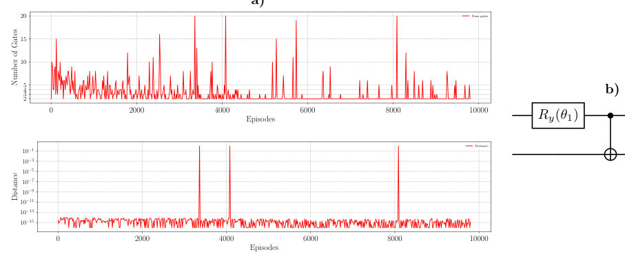
<figcaption class="paper-figure-caption"><b>Fig 1.</b> Figure 1: (a) Number of gates and trace distance achieved during training for the Bell state. (b) Circuit learned by the agent to approximate the Bell state.</figcaption>
</figure>
<figure class="paper-figure-card">
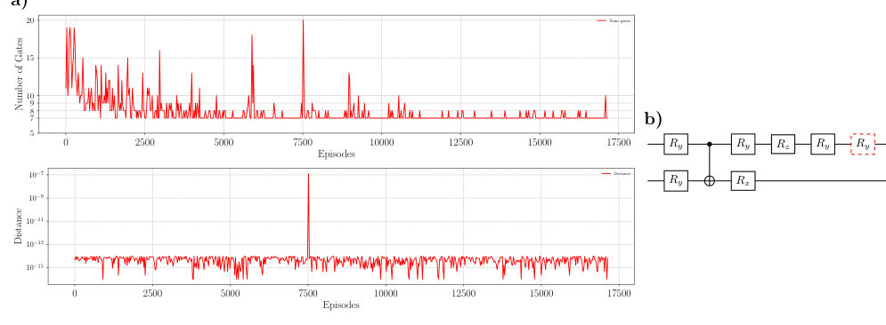
<figcaption class="paper-figure-caption"><b>Fig 2.</b> Figure 2: a) Number of gates and trace distance achieved during the training for a random 2-qubit state. b) Circuit achieved by the agent to approximate a 2-qubit random state.</figcaption>
</figure>
<figure class="paper-figure-card">
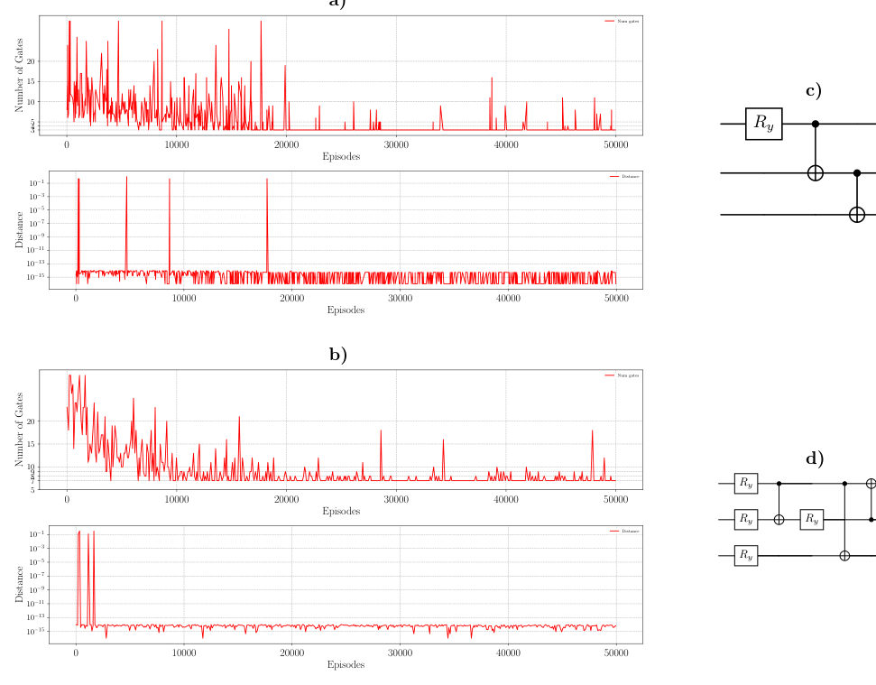
<figcaption class="paper-figure-caption"><b>Fig 3.</b> Figure 3: Number of gates and trace distance achieved during the training for a) GHZ and b) W states. Furthermore, the circuits for c) GHZ and d) W states are presented.</figcaption>
</figure>
<figure class="paper-figure-card">
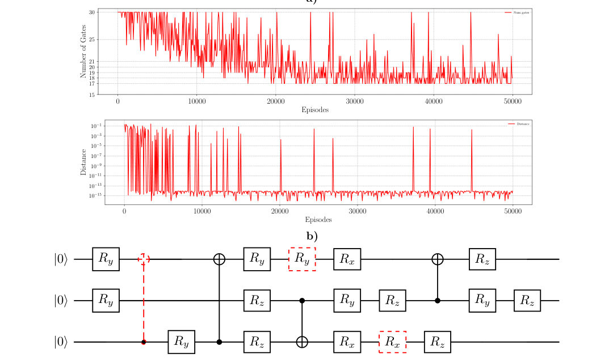
<figcaption class="paper-figure-caption"><b>Fig 4.</b> Figure 4: a) Number of gates and trace distance achieved during the training for a 3-qubit random state. b) Circuit achieved by the agent to approximate a random 3-qubit state.</figcaption>
</figure>
<figure class="paper-figure-card">
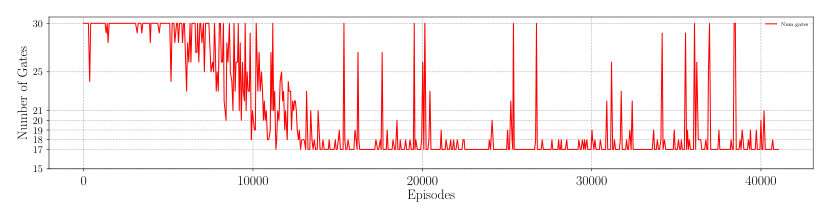
<figcaption class="paper-figure-caption"><b>Fig 5.</b> Figure 5: Number of gates achieved during the training for a 3-qubit random state with λ = 1 and p = 5 × #AppendedGates.</figcaption>
</figure>
</div>
<p><strong>Summary.</strong> The paper presents a novel deep reinforcement learning framework utilizing Proximal Policy Optimization (PPO) to solve the challenging problem of Approximate Quantum State Preparation (QSP). By treating circuit construction as an sequential decision-making process, the agent learns to append gates optimally to approximate target states with high fidelity. This demonstrates a powerful ML approach for quantum circuit design across multiple qubit counts.</p>
<p><strong>Why it may be interesting.</strong> This work directly addresses quantum circuit synthesis, a crucial component of near-term quantum algorithm development. The application of advanced ML techniques like PPO to navigate exponentially large physical search spaces is highly relevant for designing complex quantum protocols.</p>
<details>
<summary>Detailed structure</summary>
<p><strong>Main problem.</strong> The core challenge is Approximate Quantum State Preparation (QSP), which requires finding a quantum circuit to approximate a target state, a problem whose search space grows exponentially with the number of qubits.</p>
<p><strong>Main result.</strong> The proposed framework successfully achieved high-fidelity approximations ($10^{-14}$) for various predefined and random states up to 5 qubits by optimizing circuit construction.</p>
<p><strong>Method.</strong> Deep Reinforcement Learning (RL) using Proximal Policy Optimization (PPO) is employed. An agent iteratively appends gates to a Parameterized Quantum Circuit (PQC), guided by a custom logarithmic reward function that balances fidelity improvement and gate count minimization.</p>
<p><strong>Model / system.</strong> The system involves $n$-qubit quantum circuits initialized at $|0
angle^{\otimes n}$. The action space includes single-qubit rotations ($R_x, R_y, R_z$) and CNOT gates. Performance is tested on 2 to 5 qubits.</p>
<p><strong>Key observables.</strong> Fidelity $F(\psi, \phi)$ between the target state $\psi$ and the current state $\phi$, and the total number of gates used in the resulting circuit.</p>
<p><strong>Important parameters / regimes.</strong> The required approximation error threshold is set to $10^{-14}$. Training involves hyperparameters like penalty factor $p=10$ and scaling coefficient $\lambda=10$.</p>
<p><strong>Assumptions / limitations.</strong> The primary limitation noted is that performance degrades as the number of qubits increases due to the exponential search space growth, and the agent's action space might be incomplete (e.g., missing Hadamard gate).</p>
<p><strong>Figures summary.</strong> Figures illustrate the training evolution (gates vs. distance) for Bell states and random 2-qubit states, alongside results comparing the number of gates required for GHZ and W states.</p>
<p><strong>Paper structure.</strong> The paper introduces QSP as a hard problem, proposes using PPO/RL to solve it by sequentially building PQCs. It details the specific RL setup (reward function, action space), presents experimental results across 2-5 qubits for various target states, and concludes with performance analysis.</p>
</details>
<details>
<summary>Abstract</summary>
<p>In this work, a quantum architecture search framework for approximate quantum state preparation (QSP) is proposed. QSP is a challenging task, since the search space grows exponentially with the number of qubits, making the identification of the optimal circuit non-trivial. To address this problem, deep reinforcement learning is employed through an agent based on proximal policy optimization. The objective of the agent is to identify the best possible approximation of the target state while simultaneously minimizing the number of gates used. At each step, the agent appends a new gate to the circuit and recomputes the fidelity between the approximated state and the target states. Various experiments have been performed from 2 to 5 qubits. Both predefined states, such as Bell, GHZ, W, and Dicke states, and completely random states are considered. The proposed framework is able to achieve approximation errors of $10^{-14}$.</p>
</details>
<p><sub><a href="#top">↑ back to top</a></sub></p>

<p><a id="paper-2607.21409"></a></p>
<h3 id="cautious-optimism-for-deep-parameterized-quantum-circuits"><a href="http://arxiv.org/abs/2607.21409v1">Cautious optimism for deep parameterized quantum circuits</a></h3>
<p><strong>Authors:</strong> Marie Kempkes, Elies Gil-Fuster, Carlos Bravo-Prieto, Aroosa Ijaz, Alissa Wilms, Jens Eisert, Evert van Nieuwenburg, Vedran Dunjko<br>
<strong>Type:</strong> theory · <strong>Category:</strong> disordered systems and neural networks · <strong>PDF:</strong> <a href="https://arxiv.org/pdf/2607.21409v1">https://arxiv.org/pdf/2607.21409v1</a><br>
<strong>Analysis basis:</strong> full PDF text, analyzed in chunks</p>
<div class="figure-strip-hint">↔ Scroll figures horizontally</div>
<div class="paper-figures-scroll">
<figure class="paper-figure-card">
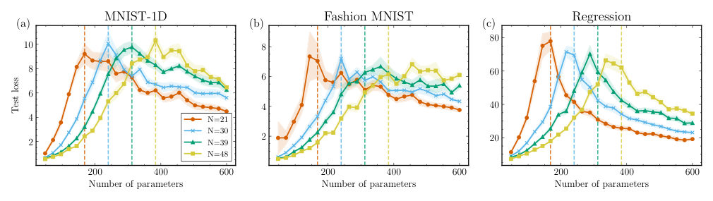
<figcaption class="paper-figure-caption"><b>Fig 1.</b> Figure 1. Test loss as a function of the number of parameters p for (a) MNIST-1D and (b) Fashion MNIST classification, and (c) a multi- dimensional synthetic regression task, for different training set sizes N. Vertical dashed lines indicate the predicted interpolation thresholds p = NK. In all three tasks, the test loss peaks close to interpolation and decreases again in the overparameterized regime, displaying a characteristic double descent profile. The shaded areas correspond to the standard deviation for ten independent experiment repetitions, each using independently sampled training data.</figcaption>
</figure>
</div>
<p><strong>Summary.</strong> This paper investigates the generalization capabilities of parameterized quantum circuits by analyzing their scaling behavior with model size. Using advanced random matrix theory and spectral analysis, the authors prove that these circuits can exhibit a double descent phenomenon. This suggests that increasing circuit depth/parameters does not automatically lead to performance degradation in practice.</p>
<p><strong>Why it may be interesting.</strong> This work connects concepts from classical overparameterized neural networks (double descent) to quantum machine learning models, providing theoretical grounding for the utility of very large, complex quantum circuits.</p>
<details>
<summary>Detailed structure</summary>
<p><strong>Main problem.</strong> The central challenge is understanding how the generalization performance of parameterized quantum circuits (PQCs) scales with an increasing number of trainable parameters.</p>
<p><strong>Main result.</strong> The authors show that gradient-based PQCs can exhibit a double descent phenomenon, meaning their test error does not necessarily degrade as model size increases past the interpolation threshold.</p>
<p><strong>Method.</strong> The analysis combines rigorous theoretical derivations using add-one-in perturbation techniques and spectral properties of random matrices to bound the expected risk. These bounds are then compared against numerical results.</p>
<p><strong>Model / system.</strong> The study focuses on data re-uploading PQCs, where the quantum state $
ho(x; \vartheta)$ depends on input data $x$ and trainable parameters $\vartheta$. The performance is measured by minimizing an expected risk function.</p>
<p><strong>Key observables.</strong> Expected risk ($L(\vartheta)$) vs. model size ($p$), test loss, and eigenvalues of sample covariance/Hessian matrices.</p>
<p><strong>Important parameters / regimes.</strong> Number of trainable parameters ($p$), training set size ($N$), the ratio $p/N$, and the interpolation threshold ($p=NK$).</p>
<p><strong>Assumptions / limitations.</strong> The analysis relies on asymptotic limits ($N, p 	o \infty$) and several technical assumptions regarding spectral properties (e.g., Assumptions 1-7) and local minima existence.</p>
<p><strong>Figures summary.</strong> Numerical experiments consistently observe the predicted double descent behavior across multiple datasets, showing test loss peaking near the interpolation threshold ($p=NK$).</p>
<p><strong>Paper structure.</strong> The paper develops theoretical lower and upper bounds on the expected risk using spectral analysis. It then demonstrates that these derived bounds exhibit a maximum at $p=N$ (or $p=NK$), confirming double descent behavior both theoretically and numerically.</p>
</details>
<details>
<summary>Abstract</summary>
<p>A central challenge in quantum machine learning is understanding the scaling behavior of parameterized quantum circuits (PQCs). In particular, it remains unclear how their performance on unseen data changes as the number of trainable parameters increases. Prior works have derived formal generalization guarantees for quantum models, but it is well-known that many such results do not fully characterize generalization behavior in practice. In this work, we show that gradient-based PQCs can exhibit improved performance on unseen data as model size increases, displaying the phenomenon of double descent. This contrasts with the traditional view that larger models lead to degraded generalization. We provide analytical results rigorously underpinning this behavior by leveraging add-one-in perturbation techniques and spectral properties of random matrices. We support these results with numerical experiments on re-uploading PQCs across several data sets and training set sizes, consistently observing the predicted double descent behavior. While other obstacles on the path toward practical quantum machine learning remain, our finding that deeper parameterized quantum circuits do not necessarily exhibit degraded performance provides reasons for cautious optimism.</p>
</details>
<p><sub><a href="#top">↑ back to top</a></sub></p>

<p><a id="paper-2607.21186"></a></p>
<h3 id="do-emulated-quantum-circuits-change-what-cnns-look-at-performance-and-explainability-comparison-in-medical-image-classification"><a href="http://arxiv.org/abs/2607.21186v1">Do emulated quantum circuits change what CNNs look at? Performance and explainability comparison in medical image classification</a></h3>
<p><strong>Authors:</strong> Guillermo Rubiños Rodríguez, Martín Ottavianelli, Mateo Alonso, Gonzalo Blázquez Gil, Boris-Stephan Rauchmann, Pablo Díez-Valle, Sergio Altares-López<br>
<strong>Type:</strong> both · <strong>Category:</strong> quantum information and computing · <strong>PDF:</strong> <a href="https://arxiv.org/pdf/2607.21186v1">https://arxiv.org/pdf/2607.21186v1</a><br>
<strong>Analysis basis:</strong> full PDF text, analyzed in chunks</p>
<div class="figure-strip-hint">↔ Scroll figures horizontally</div>
<div class="paper-figures-scroll">
<figure class="paper-figure-card">
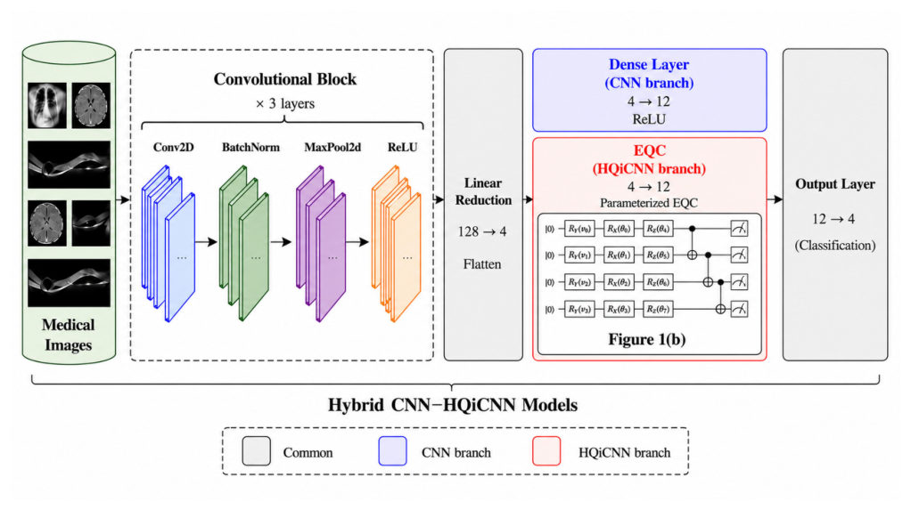
<figcaption class="paper-figure-caption"><b>Fig 1.</b> Figure 1. Schematic representation of the model to compare. Both share a common architecture and only differ in the layer right before the output. The HQiCNN uses a preprocessing scaled sigmoid transformation to map the input data into the quantum circuit. (b) Parameterized EQC used within the HQiCNN algorithm.</figcaption>
</figure>
<figure class="paper-figure-card">
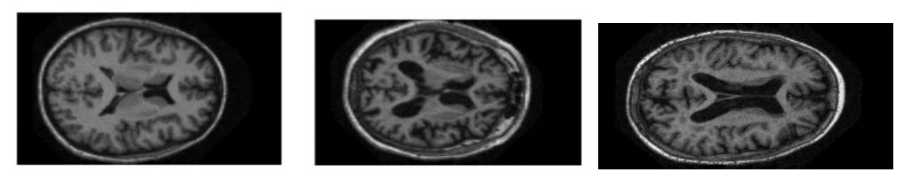
<figcaption class="paper-figure-caption"><b>Fig 2.</b> Figure 2. Class samples of the considered datasets. Sub-figures a, b,c and d correspond to the retinal OCT images28. Sub-figures e, f and g correspond to the OASIS-1 Dementia dataset16.</figcaption>
</figure>
<figure class="paper-figure-card">
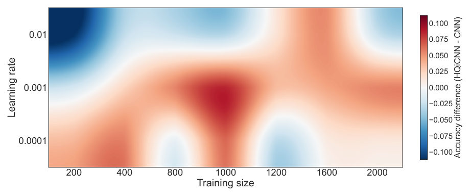
<figcaption class="paper-figure-caption"><b>Fig 3.</b> Figure 3. Mean test accuracy across ten different seeds with for the CNN and HQiCNN models exploring different learning rates and training sizes. The read areas indicate a better mean accuracy performance of HQiCNN model, while the blue area indicate that the CNN outperforms the hybrid model. The used metric values are discretized, however interpolation is used to make the figure smoother.</figcaption>
</figure>
<figure class="paper-figure-card">
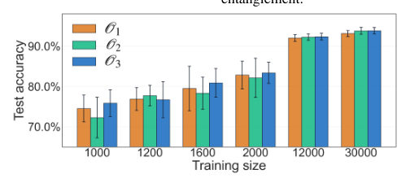
<figcaption class="paper-figure-caption"><b>Fig 4.</b> Figure 4. Batch size and quantum properties comparisons for the OCT dataset. In subfigures 4a and 4b, the black horizontal lines of the box plots represent the median, the box covers from the first to the third quartile and the whiskers represent the maximum and minimum points within a 1.5×IQR from the quartiles.</figcaption>
</figure>
<figure class="paper-figure-card">
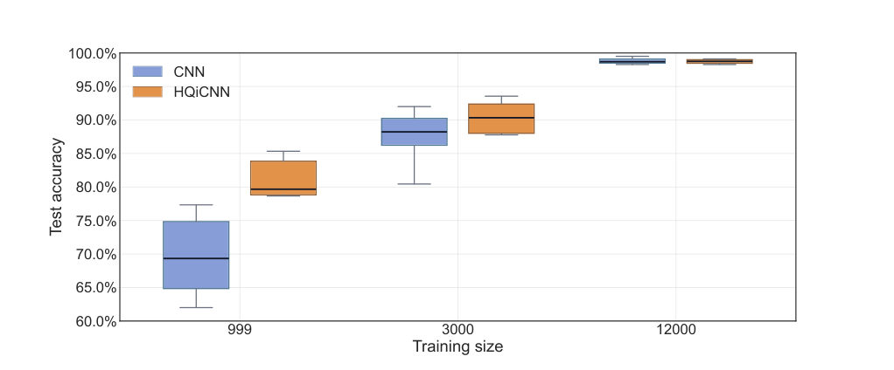
<figcaption class="paper-figure-caption"><b>Fig 5.</b> Figure 5. Accuracy comparison between the HQiCNN and CNN models for the dementia dataset (See Section 4.1). Each model uses the best learning rate found for the most comparable training size in Table 2. We remark that the use of a training size of 999 is cause by ensuring a balanced dataset within the 3 classes. The black horizontal lines of the box plots represent the median, the box covers from the first to the third quartile and the whiskers represent the maximum and minimum points within a 1.5×IQR from the quartiles.</figcaption>
</figure>
</div>
<p><strong>Summary.</strong> This work compares hybrid quantum-inspired CNNs (HQiCNN) against standard CNNs for medical image classification using emulated quantum circuits. The study finds that performance depends heavily on data availability and hyperparameters, demonstrating that both models can achieve high accuracy while providing comparable, anatomically plausible explanations of their predictions.</p>
<p><strong>Why it may be interesting.</strong> It provides a rigorous benchmark for quantum-inspired machine learning models by comparing them against classical baselines under controlled conditions, addressing the question of genuine quantum advantage in practical AI tasks.</p>
<details>
<summary>Detailed structure</summary>
<p><strong>Main problem.</strong> The study investigates whether small, classically-emulated quantum circuit components can meaningfully enhance complex deep learning models for medical image classification compared to purely classical architectures.</p>
<p><strong>Main result.</strong> No single architecture consistently dominates; HQiCNN shows gains in intermediate data regimes, while CNN excels with large datasets. Both methods prove capable of attending to anatomically plausible regions.</p>
<p><strong>Method.</strong> A systematic comparison was conducted between a Hybrid Quantum-inspired CNN (HQiCNN) and a classical CNN by varying hyperparameters like dataset size, entanglement, and observable sets.</p>
<p><strong>Model / system.</strong> The model uses an emulated quantum circuit component (EQC) with four qubits, parameterized by rotations ($R_X, R_Y, R_Z$) and CNOT gates, which replaces a dense layer in the CNN backbone. This approach avoids physical hardware limitations.</p>
<p><strong>Key observables.</strong> $|SHAP|$IoU and $EMD_{pos}$ metrics are used to quantify the spatial overlap and similarity of model attention maps across different architectures and data regimes.</p>
<p><strong>Important parameters / regimes.</strong> Training set size (1000 vs. 30,000 samples), learning rate ($10^{-2}$ to $10^{-4}$), circuit entanglement status, and observable sets ($    ext{O}1,    ext{O}2,    ext{O}3$).</p>
<p><strong>Assumptions / limitations.</strong> The quantum component is simulated using native PyTorch functions; the analysis relies on comparing performance under controlled hyperparameter variations.</p>
<p><strong>Figures summary.</strong> Figure 6 compares explainability plots ($|SHAP|$IoU) for OCT data across different training sizes, showing consistent attention regions. Figure 6b relates image count to $EMD_{pos}$, demonstrating convergence of explanations with more data.</p>
<p><strong>Paper structure.</strong> The paper systematically introduces the HQiCNN vs. CNN comparison, details the model architecture and hyperparameter search space (Table 1), presents results on performance across varying datasets/hyperparameters, and concludes with an explainability analysis using SHAP metrics.</p>
</details>
<details>
<summary>Abstract</summary>
<p>Numerous studies have analyzed the use of hybrid quantum-classical convolutional neural networks as a promising alternative to classical deep learning. However, network components on quantum hardware impose fundamental limitations, while the scalability of quantum circuits leads to trainability issues. In this work, we investigate whether small, classically-emulated quantum circuit components can play a meaningful role within complex models, offering an alternative to purely classical convolutional architectures. To this end, we present a systematic study of the effectiveness of a Hybrid Quantum-inspired Convolutional Neural Network (HQiCNN) compared with a parameter-matched classical Convolutional Neural Network (CNN) that differs only in an intermediate dense neural layer. Both models are evaluated on two real-world medical datasets while systematically varying the different hyperparameters, ensuring a fair model comparison that is both dataset and hyperparameter independent. The results show that no architecture consistently dominates the other: the HQiCNN achieves its largest gains in intermediate-data regimes, whereas the CNN reaches the highest accuracies for the largest training sets in both datasets. Furthermore, removing entanglement produces comparable performance while enabling substantially better scalability of quantum simulations, and richer observable sets become beneficial only when sufficient training data are available. Finally, we propose two SHAP-based explainability tools for comparing the predictions between both models, $|SHAP|$IoU and $EMD_{pos}$ metric, to demonstrate that both architectures consistently attend to anatomically plausible regions. Thus, we provide a comprehensive benchmark showing that, under certain conditions, hybrid quantum-inspired models are an alternative that can offer benefits in practical tasks such as medical image classification.</p>
</details>
<p><sub><a href="#top">↑ back to top</a></sub></p>

<p><a id="paper-2607.21337"></a></p>
<h3 id="efficient-classical-simulation-of-large-scale-unitary-cluster-jastrow-circuits"><a href="http://arxiv.org/abs/2607.21337v1">Efficient classical simulation of large-scale unitary cluster Jastrow circuits</a></h3>
<p><strong>Authors:</strong> Hrishikesh Belagali, Thomas Van Camp, R. Pradeep, Sourin Das, Namit Anand, Ryan LaRose<br>
<strong>Type:</strong> theory · <strong>Category:</strong> numerical methods · <strong>PDF:</strong> <a href="https://arxiv.org/pdf/2607.21337v1">https://arxiv.org/pdf/2607.21337v1</a><br>
<strong>Analysis basis:</strong> full PDF text, analyzed in chunks</p>
<div class="figure-strip-hint">↔ Scroll figures horizontally</div>
<div class="paper-figures-scroll">
<figure class="paper-figure-card">
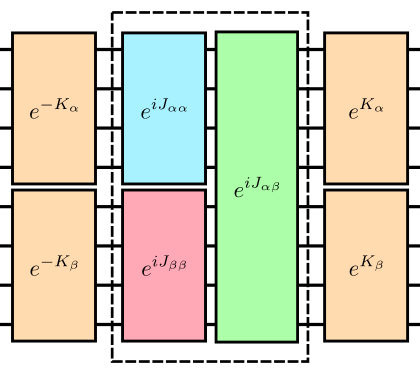
<figcaption class="paper-figure-caption"><b>Fig 1.</b> FIG. 1. Structure of the unitary cluster Jastrow (UCJ) ansatz (3) for L = 1 layer. The top qubit lines are α spins and the bottom qubit lines are β spins. The orange boxes can be implemented with O(N 2) Givens rotations where N = No + Nv is the sum of occupied and virtual orbitals. These operators do not change between the UCJ and local UCJ ansatz. In the local UCJ (LUCJ) ansatz, sparsity is im- posed on the Jastrow J = Jαα+Jββ+Jαβ operators (blue, red, and green operators in the dashed box) by removing interac- tions which are not supported on a given quantum computer.</figcaption>
</figure>
<figure class="paper-figure-card">
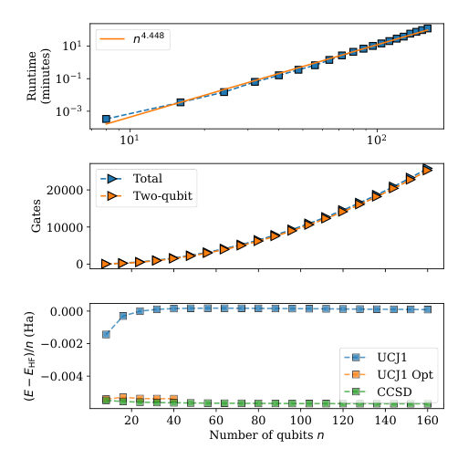
<figcaption class="paper-figure-caption"><b>Fig 2.</b> FIG. 2. Algorithm runtime, circuit statistics, and energies for simulating the single-layer UCJ (UCJ1) ansatz for Hydrogen chains up to 80 atoms (160 qubits). For visualization, we sub- tract the HF energy and normalize by the number of qubits n. As can be seen, the UCJ1 ansatz, initialized from CCSD parameters, closely follows Hartree-Fock energies. The max- imum difference (in magnitude) between HF and UCJ1 is 16 mHa, and the average difference (in magnitude) is 12 mHa with a standard deviation of 5 mHa. We also optimize the parameters of the UCJ1 ansatz up to 40 qubits and obtain comparable energies to CCSD.</figcaption>
</figure>
<figure class="paper-figure-card">
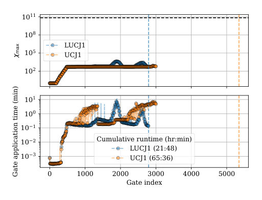
<figcaption class="paper-figure-caption"><b>Fig 3.</b> FIG. 5. Analysis of MPS TEBD for the n = 72 qubit iron sulfur LUCJ1 and UCJ1 circuits. The top plot shows the maximum bond dimension and the bottom plot shows the gate application time vs gate index. Dashed vertical lines represent the final gate index for each circuit. The horizontal dashed black line in the top plot shows the maximum possible bond dimension of 2n/2.</figcaption>
</figure>
<figure class="paper-figure-card">
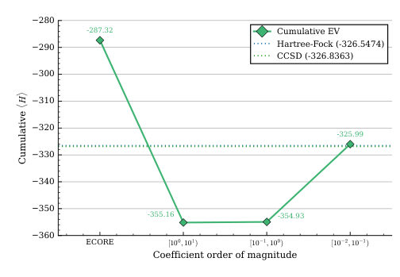
<figcaption class="paper-figure-caption"><b>Fig 4.</b> FIG. 3. Cumulative energy of Majorana propagation for the n = 72 qubit iron sulfur cluster Hamiltonian of [18] through a 1 layer LUCJ ansatz with heavy-hex connectivity. Here, en- ergy is computed by Majorana backpropagation with a cutoff of 10−6 for terms partitioned by coefficient magnitude (see Fig. 4). The final cumulative energy is not yet converged, and over 500 mHa from the Hartree-Fock energy, demonstrating the challenge of this approach. More accurate simulations (larger cutoffs) are prohibitively expensive, as the number of terms grows exponentially with the number of gates in the circuit, and truncation is used as a heuristic.</figcaption>
</figure>
<figure class="paper-figure-card">
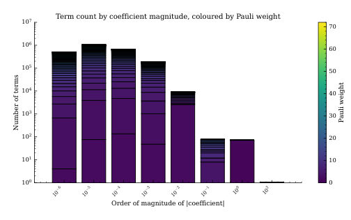
<figcaption class="paper-figure-caption"><b>Fig 5.</b> FIG. 4. Partitioning of the 72 qubit iron sulfur cluster Hamil- tonian from [18], showing the number of terms in the Hamil- tonian vs coefficient magnitude, colored by Pauli weight.</figcaption>
</figure>
</div>
<p><strong>Summary.</strong> This paper introduces a novel polynomial-time classical algorithm for calculating the ground state energy of unitary cluster Jastrow (UCJ) circuits. By efficiently propagating fermionic integrals through unitary transformations, it achieves results comparable to or better than current large-scale quantum hardware experiments. This provides a crucial theoretical benchmark for simulating strongly correlated molecular systems.</p>
<p><strong>Why it may be interesting.</strong> This work provides a powerful classical benchmark tool that bypasses hardware limitations by offering an exact, scalable method to evaluate complex quantum chemistry circuits used in AMO physics simulations.</p>
<details>
<summary>Detailed structure</summary>
<p><strong>Main problem.</strong> The primary goal is developing an efficient, polynomial-time classical algorithm to compute the energy of single-layer unitary cluster Jastrow (UCJ) circuits.</p>
<p><strong>Main result.</strong> The authors presented a method that can simulate large-scale UCJ experiments in minutes on standard hardware and achieved lower ground state energies than previously reported quantum simulations.</p>
<p><strong>Method.</strong> The algorithm uses Heisenberg evolution of the second-quantized Hamiltonian, propagating one-body and two-body integrals through unitary transformations using techniques derived from Löwdin's formula.</p>
<p><strong>Model / system.</strong> The work focuses on simulating electronic structure in chemistry using the Unitary Cluster Jastrow (UCJ) ansatz, which is a quantum circuit inspired by coupled cluster methods for strongly correlated molecules.</p>
<p><strong>Key observables.</strong> Ground state energy ($E_{	ext{UCJ}}$), compared against Hartree-Fock and CCSD results.</p>
<p><strong>Important parameters / regimes.</strong> Number of orbitals ($N$), number of qubits (up to 160 in testing).</p>
<p><strong>Assumptions / limitations.</strong> The algorithm computes only the expectation value (weak simulation) and is limited to single layers ($L=1$) due to complexity issues with higher layers.</p>
<p><strong>Figures summary.</strong> Figure 2 plots runtime scaling for Hydrogen chains; Figure 3 compares cumulative energy from different propagation methods against approximation levels.</p>
<p><strong>Paper structure.</strong> The paper develops mathematical machinery to exactly update one- and two-body integrals under unitary evolution, culminating in a polynomial-time algorithm for the single-layer UCJ energy calculation.</p>
</details>
<details>
<summary>Abstract</summary>
<p>Recent experiments on quantum computers have challenged the limits of classical computation in chemistry, simulating ground states of strongly correlated molecules. Many of these experiments have utilized the unitary cluster Jastrow ansatz, a quantum circuit inspired by the unitary coupled cluster ansatz that can be tailored to current quantum hardware. Notably, the largest experiment in Sci. Adv. 11, 25 (2025) executed a quantum circuit with 77 qubits and 10,570 gates on an IBM quantum computer and performed classical post-processing with up to 6400 nodes on Fugaku to compute ground state energies better than Hartree-Fock. In this work, we present a polynomial time classical algorithm to compute the energy of any single-layer unitary cluster Jastrow circuit, independent of locality constraints for quantum hardware. Our algorithm can reproduce the largest experiment from Sci. Adv. 11, 25 (2025) in less than a minute on a laptop, and through circuit optimization enabled by fast simulation we achieve a lower ground state energy than the experiment.</p>
</details>
<p><sub><a href="#top">↑ back to top</a></sub></p>

<p><a id="paper-2607.21563"></a></p>
<h3 id="fault-tolerant-quantum-algorithms-for-simulating-atomic-nuclei"><a href="http://arxiv.org/abs/2607.21563v1">Fault-tolerant quantum algorithms for simulating atomic nuclei</a></h3>
<p><strong>Authors:</strong> James Benstead, Michael Garn, Neil Gaspar, Sean Greenaway, Angus Kan, Lloyd La Ronde, Chandan Sarma, Paul Stevenson<br>
<strong>Type:</strong> theory · <strong>Category:</strong> quantum information and computing · <strong>PDF:</strong> <a href="https://arxiv.org/pdf/2607.21563v1">https://arxiv.org/pdf/2607.21563v1</a><br>
<strong>Analysis basis:</strong> full PDF text, analyzed in chunks</p>
<div class="figure-strip-hint">↔ Scroll figures horizontally</div>
<div class="paper-figures-scroll">
<figure class="paper-figure-card">
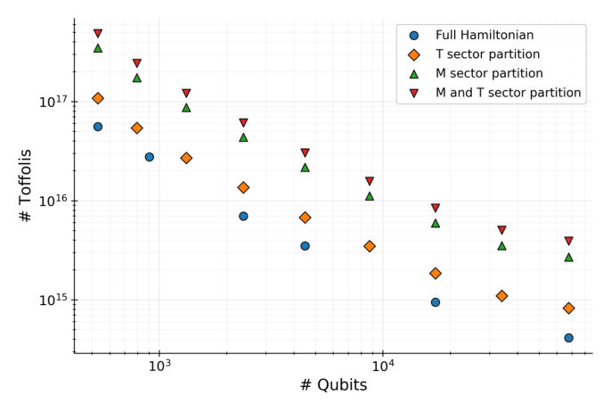
<figcaption class="paper-figure-caption"><b>Fig 1.</b> FIG. 1: Quantum resource estimates for applying quantum phase estimation to the no-core shell-model Hamiltonian explored in Sec. III B. Each set of data corresponds to a partitioning strategy, with the blue circles corresponding to the full Hamiltonian with no partitioning into symmetry sectors, the orange diamonds corresponding to a partitioning into sectors with different isospin quantum numbers, the green triangles corresponding to partitioning into sectors with different total angular momentum projection quantum numbers and the red inverted triangles corresponding to a partitioning by both isospin projection and total angular momentum quantum numbers. The variation in Toffoli...</figcaption>
</figure>
</div>
<p><strong>Summary.</strong> This paper develops and analyzes fault-tolerant quantum algorithms designed to simulate the complex Hamiltonians governing atomic nuclei. By providing resource estimates for both effective shell-model and no-core models, it establishes a crucial benchmark for applying quantum computing to nuclear physics. The research highlights the computational challenges specific to nuclear interactions compared to electronic structure problems.</p>
<p><strong>Why it may be interesting.</strong> This work directly addresses the feasibility frontier of applying quantum computation to fundamental physics problems outside chemistry, offering concrete benchmarks that guide future hardware development for nuclear structure theory.</p>
<details>
<summary>Detailed structure</summary>
<p><strong>Main problem.</strong> To develop concrete applications for fault-tolerant quantum computers by simulating the complex structure of atomic nuclei.</p>
<p><strong>Main result.</strong> The authors provide resource estimates for simulating nuclear Hamiltonians using both effective shell-model and no-core-shell-model approaches, noting that while some benchmarks are comparable to chemistry simulations, the full no-core model requires significantly higher resources.</p>
<p><strong>Method.</strong> They construct quantum algorithms based on Quantum Phase Estimation (QPE) tailored for fermionic systems, utilizing techniques like Jordan-Wigner transformations and circuit optimization to estimate resource costs in terms of Toffoli gates and qubits.</p>
<p><strong>Model / system.</strong> The system is the atomic nucleus, modeled by Hamiltonians derived from chiral effective field theory. These Hamiltonians include one-, two-, and three-body interactions, which are more complex than those typically used for electronic structure problems.</p>
<p><strong>Key observables.</strong> Ground state energy estimation, quantum resource estimates (Toffoli gate count, qubit counts), and nuclear structure properties.</p>
<p><strong>Important parameters / regimes.</strong> The complexity scales with the number of particles and orbitals; specific parameters include $e_{\max} = 8$, $e_{2\max} = 16$, and $e_{3\max} = 8$ for EFT interactions.</p>
<p><strong>Assumptions / limitations.</strong> They assume that quantum resource estimation is the primary goal, and they compare results across different Hamiltonian formulations (phenomenological vs. no-core).</p>
<p><strong>Figures summary.</strong> Figure 1 compares resource estimates for simulating the full Hamiltonian versus partitioning it by symmetry sectors ($T_z$ or $M$), showing that sector-wise simulation leads to redundancy and increased cost for no-core models.</p>
<p><strong>Paper structure.</strong> The work progresses from establishing the need for new applications beyond chemistry, detailing the construction of quantum algorithms (QPE) for nuclear Hamiltonians, providing resource estimates for specific nuclei ($^{32}	ext{Mg}$, $^{219}	ext{At}$), and finally analyzing the efficiency of Hamiltonian decomposition strategies.</p>
</details>
<details>
<summary>Abstract</summary>
<p>To maximize the value of fault-tolerant quantum computers, it is essential to develop concrete applications beyond well-established domains such as chemistry and condensed-matter physics. Here we construct and compile quantum algorithms to simulate the structure of atomic nuclei -- a topic that has received relatively little attention from the quantum computing community despite its similarities to the electronic structure problem in chemistry -- via effective shell-model Hamiltonians and no-core-shell-model Hamiltonians with three-body interactions derived from chiral effective field theory. Furthermore, we provide quantum resource estimates, in terms of Toffoli gate and qubit counts, for these algorithms, which, to our knowledge, are the first such estimates for fault-tolerant quantum simulation of atomic nuclei. Notably, the estimates for $^{32}$Mg and $^{219}$At shell-model Hamiltonians are comparable to recent estimates of Femoco simulations, a standard benchmark in chemistry. For no-core-shell-model Hamiltonians suitable for light nuclei (up to $^{40}$Ca or so), we find that resource requirements are significantly higher, suggesting that more bespoke strategies are required to make such simulations practicable. Throughout this work, we draw upon the similarities between nuclear and electronic structure problems, while also highlighting challenges that are specific to the former. We hope this work will spur long-term collaborations between the nuclear and quantum computing community with the ultimate goal of realizing useful nuclear simulations on quantum computers.</p>
</details>
<p><sub><a href="#top">↑ back to top</a></sub></p>

<p><a id="paper-2607.20664"></a></p>
<h3 id="finite-key-underwater-quantum-key-distribution-performance-analysis-and-improvements"><a href="http://arxiv.org/abs/2607.20664v1">Finite Key Underwater Quantum Key Distribution: Performance Analysis and Improvements</a></h3>
<p><strong>Authors:</strong> Trevor Thomas, Michael Warnock, Sarah Previte, Benjamin Drozdenko, Walter O. Krawec<br>
<strong>Type:</strong> theory · <strong>Category:</strong> quantum information and computing · <strong>PDF:</strong> <a href="https://arxiv.org/pdf/2607.20664v1">https://arxiv.org/pdf/2607.20664v1</a><br>
<strong>Analysis basis:</strong> full PDF text, analyzed in chunks</p>
<div class="figure-strip-hint">↔ Scroll figures horizontally</div>
<div class="paper-figures-scroll">
<figure class="paper-figure-card">
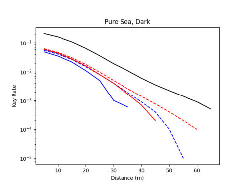
<figcaption class="paper-figure-caption"><b>Fig 1.</b> Fig. 1. Comparing the key-rate of the three (Blue) and the two (Red) decoy state BB84 protocol, for N = 107 rounds (Solid) and N = 108 rounds (Dashed) Here we assume near ideal detector efficiency of 0.9, pure sea water α = 0.043, and low ambient light E0 = 10−3. We note that two decoy outperforms three decoy in this scenario. Black: Asymptotic upper bound.</figcaption>
</figure>
<figure class="paper-figure-card">

<figcaption class="paper-figure-caption"><b>Fig 2.</b> Fig. 2. Comparing the key-rate of the three (Blue) and the two (Red) decoy state BB84 protocol, for N = 107 rounds (Solid) and N = 108 rounds (Dashed) Here we assume near ideal detector efficiency of 0.9, pure sea water α = 0.043, and heavy overcast, with the sun at the horizon E0 = 10. We note that at N = 108 signals, three decoy outperforms slightly the two decoy protocol.</figcaption>
</figure>
<figure class="paper-figure-card">

<figcaption class="paper-figure-caption"><b>Fig 3.</b> Fig. 3. Comparing the key-rate of the three (Blue) and the two (Red) decoy state BB84 protocol for N = 108 rounds (Dashed) Here we assume near ideal detector efficiency of 0.9, pure sea water α = 0.043, and lighter overcast E0 = 20. We note that, here, the three decoy state always outperforms, though distances are severely limited. We also note that N = 107 rounds did not produce a positive key-rate for either protocol.</figcaption>
</figure>
<figure class="paper-figure-card">

<figcaption class="paper-figure-caption"><b>Fig 4.</b> Fig. 4. Comparing the key-rate of the three (Blue) and the two (Red) decoy state BB84 protocol for N = 108 rounds (Dashed) Here we assume near ideal detector efficiency of 0.9, coastal ocean water α = 0.398, and night E0 = 10−3. We note that, here, again, the two decoy state protocol outperforms. We also note that N = 107 rounds did not produce a positive key-rate for either protocol.</figcaption>
</figure>
<figure class="paper-figure-card">

<figcaption class="paper-figure-caption"><b>Fig 5.</b> Fig. 5. Comparing the key-rate of the three (Blue) and the two (Red) decoy state BB84 protocol, for N = 107 rounds (Solid) and N = 108 rounds (Dashed) Here we assume low detector efficiency of 0.1. As expected, detector efficiency can greatly reduce maximal distances, even at night in ideal water.</figcaption>
</figure>
</div>
<p><strong>Summary.</strong> This paper provides a detailed theoretical analysis of Quantum Key Distribution (QKD) performance when transmitting keys underwater. It simulates the finite key regime, accounting for realistic noise sources like ambient light and water attenuation. The study demonstrates that post-processing techniques like Classical Advantage Distillation can significantly boost achievable distances in noisy underwater environments.</p>
<p><strong>Why it may be interesting.</strong> This work directly addresses quantum communication in complex, noisy media (underwater), which is a major open problem in quantum networking and requires advanced understanding of channel capacity estimation beyond simple loss models.</p>
<details>
<summary>Detailed structure</summary>
<p><strong>Main problem.</strong> The paper evaluates Quantum Key Distribution (QKD) performance over realistic underwater channels, moving beyond asymptotic bounds to consider the finite key regime.</p>
<p><strong>Main result.</strong> Classical Advantage Distillation (CAD) can significantly improve the maximal supported distance for QKD underwater when ambient light noise is high, although protocol choice and detector efficiency are critical factors.</p>
<p><strong>Method.</strong> The authors simulate two decoy state protocols in a finite key setting, incorporating detailed models for signal attenuation loss and background noise specific to underwater environments.</p>
<p><strong>Model / system.</strong> The system modeled is quantum communication through an underwater channel using weak coherent sources. The model incorporates Poisson photon statistics, detector imperfections (dark counts, efficiency), and environmental factors like water type and ambient light.</p>
<p><strong>Key observables.</strong> Secret key establishment rate ($\ell$ / total signals sent) and the maximal supported distance under various noise conditions.</p>
<p><strong>Important parameters / regimes.</strong> Attenuation coefficient ($\alpha$), background irradiance ($E_0$), detector efficiency ($\eta$), and the CAD block size ($C$).</p>
<p><strong>Assumptions / limitations.</strong> The analysis assumes a weak coherent source, relies on specific mathematical models for attenuation (e.g., exponential decay), and treats post-processing steps like error correction and privacy amplification.</p>
<p><strong>Figures summary.</strong> Figures compare key rates using decoy state BB84 protocols with and without CAD under varying environmental conditions; Tables summarize the maximal asymptotic distance based on detector efficiency, light level, and CAD block settings for different water types.</p>
<p><strong>Paper structure.</strong> The paper progresses by first detailing the physical models for signal attenuation loss over distance, then modeling background noise sources. It culminates in evaluating the protocol performance using finite key derivations, specifically analyzing the benefit of Classical Advantage Distillation (CAD) under varying environmental parameters.</p>
</details>
<details>
<summary>Abstract</summary>
<p>Quantum key distribution (QKD) allows for the establishment of a secret key between two parties, secure against computationally unbounded adversaries. Most experimental and theoretical research in this area, investigates the performance of QKD over fiber or free space channels. A growing body of work, however, has begun to investigate its performance in underwater scenarios. Here, we consider the realistic finite key scenario, and evaluate the simulated performance of two different decoy state protocols. We show that there are certain underwater channels where "simpler" QKD protocols outperform more complex ones. Finally, we also investigate methods to improve QKD performance underwater, specifically looking at classical advantage distillation, which we show can greatly improve the maximal distance supported by QKD underwater.</p>
</details>
<p><sub><a href="#top">↑ back to top</a></sub></p>

<p><a id="paper-2607.20804"></a></p>
<h3 id="hardness-and-complexity-transition-of-noisy-random-circuit-sampling"><a href="http://arxiv.org/abs/2607.20804v1">Hardness and Complexity Transition of Noisy Random Circuit Sampling</a></h3>
<p><strong>Authors:</strong> Byeongseon Go, Changhun Oh, Hyunseok Jeong<br>
<strong>Type:</strong> theory · <strong>Category:</strong> quantum information and computing · <strong>PDF:</strong> <a href="https://arxiv.org/pdf/2607.20804v1">https://arxiv.org/pdf/2607.20804v1</a><br>
<strong>Analysis basis:</strong> full PDF text, analyzed in chunks</p>
<div class="figure-strip-hint">↔ Scroll figures horizontally</div>
<div class="paper-figures-scroll">
<figure class="paper-figure-card">

<figcaption class="paper-figure-caption"><b>Fig 1.</b> FIG. 1. Complexity phase diagram for simulating (sampling) noisy RCS under i.i.d. depolarizing noise (Definition 5) within inverse-polynomial TVD. The horizontal axis denotes the circuit depth d, and the vertical axis denotes the depolarizing noise strength γ in Definition 5. Colored regions indicate parameter regimes where, for certain circuit architectures, classical simulation is either known to be efficient or provably hard under the hardness conjecture for ideal RCS (Conjecture 1). The dark green region is implied by Refs. [12, 13, 34–36]. The hatched and dotted regions are obtained from known shallow-depth simulability results for RCS: Refs. [37–39] for some local 2D architectures, and...</figcaption>
</figure>
<figure class="paper-figure-card">

<figcaption class="paper-figure-caption"><b>Fig 2.</b> FIG. 2. Schematics of our RCS settings. (a) Schematic of ideal RCS. The gray boxes denote Haar-random gates, so that the overall circuit is drawn from the ensemble HA in Definition 4. The input |0n⟩is evolved by a random circuit C ∼HA and measured in the computational basis, yielding an output x ∈{0, 1}n distributed according to p(C, x) in Eq. (6). (b) Schematic of noisy RCS. From (a), single-qubit depolarizing channels (red boxes) in Definition 5 are applied to each qubit at each time step (depth), such that the output x ∈{0, 1}n is distributed according to ep(C, γ, x) in Eq. (10). While we draw a 1D local architecture in the figure for illustration, we consider general circuit architecture A...</figcaption>
</figure>
<figure class="paper-figure-card">

<figcaption class="paper-figure-caption"><b>Fig 3.</b> FIG. 3. Logical flow of the noisy-RCS sampling-hardness proof. In the top row, assuming an efficient classical sampler for noisy RCS at noise strength γ∗= O(log n/(nd)), Theorem 3 implies an efficient sampler for every larger noise strength γ ≥γ∗. Stockmeyer’s reduction (Lemma 1) then yields noisy-probability estimation for any γ ≥γ∗within a finite level of the polynomial hierarchy (PH). In the bottom row, Conjecture 1 gives average-case #P-hardness of ideal-probability estimation, and Theorem 2 transfers this hardness to noisy-probability estimation when γ ≥γ∗is given as an input parameter. Combining the two arguments would place a #P-hard estimation task inside a finite level of PH, implying a...</figcaption>
</figure>
</div>
<p><strong>Summary.</strong> This paper rigorously establishes a complexity-theoretic threshold for Random Circuit Sampling under realistic depolarizing noise. By combining polynomial extrapolation with a monotonicity argument, the authors show that RCS remains classically hard to simulate up to a specific noise strength $\gamma = \Theta(\log n/(nd))$. This identifies this scale as the asymptotic boundary between quantum advantage and classical simulation feasibility.</p>
<p><strong>Why it may be interesting.</strong> This work directly addresses the practical limitations of quantum advantage claims by quantifying how noise degrades computational hardness. For AMO/Open Quantum Systems researchers, understanding this boundary is crucial for designing fault-tolerant protocols or interpreting experimental results from noisy hardware.</p>
<details>
<summary>Detailed structure</summary>
<p><strong>Main problem.</strong> The central problem is determining the noise-strength boundary that separates regimes where Random Circuit Sampling (RCS) remains classically hard to simulate from those where it becomes efficiently simulable.</p>
<p><strong>Main result.</strong> The authors establish that noisy RCS remains classically hard to simulate within an inverse-polynomial total variation distance for noise strengths $\gamma = O(\log n/(nd))$, unless the polynomial hierarchy collapses.</p>
<p><strong>Method.</strong> The proof combines a low-degree polynomial extrapolation technique with a monotonicity reduction, transferring known ideal hardness results to the noisy setting without extra assumptions.</p>
<p><strong>Model / system.</strong> The model is Noisy Random Circuit Sampling (noisy RCS) applied to $n$-qubit circuits subjected to standard local depolarizing noise of strength $\gamma$. The analysis relies on comparing the noisy output probability to its ideal counterpart.</p>
<p><strong>Key observables.</strong> Inverse-polynomial total variation distance (TVD) between the true and simulated sampling distributions, and the resulting hardness/simulability boundary scale.</p>
<p><strong>Important parameters / regimes.</strong> Noise strength $\gamma$, number of qubits $n$, and circuit depth $d$. The critical asymptotic scale is identified as $\gamma = \Theta(\log n/(nd))$.</p>
<p><strong>Assumptions / limitations.</strong> The result assumes the standard average-case #P-hardness conjecture for ideal RCS. It also relies on combining its hardness bound with existing simulability results for layered, regularly connected architectures.</p>
<p><strong>Figures summary.</strong> Figure 1 illustrates a complexity phase diagram showing the established hard region (red) relative to known efficient simulation regimes under i.i.d. depolarizing noise.</p>
<p><strong>Paper structure.</strong> The paper first defines the problem of noisy RCS hardness and then develops the mathematical machinery using polynomial extrapolation and monotonicity reduction. It applies these tools to transfer the ideal hardness conjecture to a specific, non-trivial noise strength $\gamma^*$. Finally, it combines this result with known simulability bounds to pinpoint the transition scale.</p>
</details>
<details>
<summary>Abstract</summary>
<p>Random circuit sampling (RCS) is a leading candidate for demonstrating quantum advantage, supported by strong complexity-theoretic evidence of hardness in the ideal setting and by rapid experimental progress to date. In practice, however, noise is unavoidable, and a central problem is to identify the noise-strength boundary between classically simulable and classically hard regimes. In this work, we establish an architecture-general hardness bound for this boundary for the standard local depolarizing noise of strength $γ$. Assuming the standard average-case #P-hardness conjecture for ideal RCS, we show that, for any circuit architecture satisfying this conjecture, noisy RCS on the same architecture remains hard to simulate classically within any inverse-polynomial total variation distance whenever $γ=O(\log n/(nd))$ for $n$-qubit circuits of depth $d$, unless the polynomial hierarchy collapses. Crucially, noisy-RCS hardness follows without any additional conjectural or architecture-specific assumption beyond those already entering the ideal-RCS hardness framework. Our proof combines a low-degree polynomial extrapolation with a monotonicity reduction showing that efficient classical simulation at one depolarizing noise strength implies efficient simulation at every larger strength. Together, these ingredients transfer the standard ideal-RCS hardness conjecture to sampling hardness at a prespecified noise strength. Finally, combining the convergence-to-uniformity result of Dalzell et al. [Commun. Math. Phys. 405, 78 (2024)] with our monotonicity reduction yields efficient classical simulation for $γ=ω(\log n/(nd))$ on layered, regularly connected architectures. Thus, wherever the two architectural settings overlap, this identifies $γ=Θ(\log n/(nd))$ as the asymptotic complexity-transition scale.</p>
</details>
<p><sub><a href="#top">↑ back to top</a></sub></p>

<p><a id="paper-2607.21449"></a></p>
<h3 id="quantumchain-blockchain-backed-quantum-federated-learning-for-financial-fraud-detection"><a href="http://arxiv.org/abs/2607.21449v1">QuantumChain: Blockchain-Backed Quantum Federated Learning for Financial Fraud Detection</a></h3>
<p><strong>Authors:</strong> Epameinondas Douros, Konstantinos Dalampekis, Nouhaila Innan, Ioannis Theodonis, Muhammad Shafique<br>
<strong>Type:</strong> theory · <strong>Category:</strong> quantum information and computing · <strong>PDF:</strong> <a href="https://arxiv.org/pdf/2607.21449v1">https://arxiv.org/pdf/2607.21449v1</a><br>
<strong>Analysis basis:</strong> full PDF text, analyzed in chunks</p>
<div class="figure-strip-hint">↔ Scroll figures horizontally</div>
<div class="paper-figures-scroll">
<figure class="paper-figure-card">

<figcaption class="paper-figure-caption"><b>Fig 1.</b> Fig. 1: Overview of QuantumChain, including local HQNN training, encrypted update submission, blockchain-based auditability, QKD-derived session keys, and secure federated aggregation.</figcaption>
</figure>
<figure class="paper-figure-card">

<figcaption class="paper-figure-caption"><b>Fig 2.</b> Fig. 2: Shallow and Deep QLayer architectures. The highlighted region denotes the Shallow QLayer embedded within the Deep QLayer, with shared AngleEmbedding input encoding and Pauli-Z readout.</figcaption>
</figure>
</div>
<p><strong>Summary.</strong> This paper introduces QuantumChain, a novel framework that applies Quantum Federated Learning to solve financial fraud detection under strict privacy constraints. It combines hybrid quantum-classical neural networks with advanced security measures like homomorphic encryption and blockchain auditing. The results demonstrate that this secure, quantum-enhanced approach improves detection recall over purely classical methods.</p>
<p><strong>Why it may be interesting.</strong> While applied to finance, the core mechanism involves embedding variational quantum circuits into a deep learning structure (HQNN) for computation, which is relevant to NISQ device applications in quantum machine learning theory.</p>
<details>
<summary>Detailed structure</summary>
<p><strong>Main problem.</strong> The paper addresses financial fraud detection, which is complicated by decentralized data, class imbalance, and strict privacy requirements.</p>
<p><strong>Main result.</strong> The proposed QuantumChain framework successfully integrates hybrid quantum models into a secure federated learning pipeline, achieving improved fraud-class recall over classical baselines while maintaining stable global convergence.</p>
<p><strong>Method.</strong> It employs a multi-layered security protocol combining Hybrid Quantum Neural Networks (HQNNs), homomorphic encryption, threshold secret sharing, and blockchain auditing for privacy and integrity.</p>
<p><strong>Model / system.</strong> The core model is the QuantumChain framework utilizing HQNNs, which embed variational quantum circuits between classical neural layers. Security relies on QKD-derived keys and a permissioned blockchain ledger.</p>
<p><strong>Key observables.</strong> Fraud-class recall (primary metric), global accuracy, and the Quantum Bit Error Rate (QBER) for security checks.</p>
<p><strong>Important parameters / regimes.</strong> Federated rounds (e.g., 5 rounds), client count (10 heterogeneous clients), circuit depth (Shallow vs. Deep QLayer).</p>
<p><strong>Assumptions / limitations.</strong> The blockchain layer is simulated using a local Ethereum/Ganache environment, and QKD security relies on pre-shared credentials or digital signatures for authentication.</p>
<p><strong>Figures summary.</strong> Figures illustrate the overall QuantumChain process flow (local training to aggregation), compare Shallow vs. Deep QLayer architectures, and show performance results across different settings.</p>
<p><strong>Paper structure.</strong> The paper details the architecture of QuantumChain, outlines the multi-step protocol involving local quantum training, secure update transmission via encryption/QKD, blockchain commitment, and final server-side aggregation.</p>
</details>
<details>
<summary>Abstract</summary>
<p>Financial fraud detection is challenged by decentralized data, severe class imbalance, and privacy constraints. This paper presents QuantumChain, a secure Quantum Federated Learning (QFL) framework that combines hybrid quantum-classical neural networks, encrypted federated aggregation, blockchain-based auditability, and quantum-secure communication. Each client trains a local hybrid model in which a variational quantum circuit is embedded between classical neural layers, while model updates are protected through homomorphic encryption, threshold secret sharing, and QKD-based keying. A permissioned blockchain records aggregation events and supports reputation-weighted trust among participants. We evaluate QuantumChain on financial transaction data using a compact, size-matched classical baseline to isolate the effect of the quantum layer. Results show that the HQNN achieves comparable accuracy while improving fraud-class recall in most settings, reaching 94.6% recall compared with 93.2% for the classical model. The Deep QLayer improves performance in full-data settings, suggesting that added circuit depth helps recover representational capacity when the shallow circuit becomes limited. Mixed-state simulations further show that the recall trend persists under non-ideal quantum evolution. In federated deployment with 10 heterogeneous clients, global accuracy increases from 97.7% to 98.8% over five rounds before stabilizing. These results show that QuantumChain can integrate depth-aware hybrid quantum models into a secure federated fraud-detection pipeline while maintaining stable global convergence.</p>
</details>
<p><sub><a href="#top">↑ back to top</a></sub></p>

<p><a id="paper-2607.20622"></a></p>
<h3 id="sp4z-actions-on-3d-u12-symmetric-theories-order-five-duality-and-bilayer-quantum-hall-hierarchies"><a href="http://arxiv.org/abs/2607.20622v1">Sp(4,Z) actions on 3d U(1)^2 symmetric theories: Order-five duality and bilayer quantum Hall hierarchies</a></h3>
<p><strong>Authors:</strong> Yasin F. Alam, Andreas Karch, Da-Chuan Lu, Ryan C. Spieler<br>
<strong>Type:</strong> theory · <strong>Category:</strong> strongly correlated electrons · <strong>PDF:</strong> <a href="https://arxiv.org/pdf/2607.20622v1">https://arxiv.org/pdf/2607.20622v1</a><br>
<strong>Analysis basis:</strong> full PDF text, analyzed in chunks</p>
<div class="figure-strip-hint">↔ Scroll figures horizontally</div>
<div class="paper-figures-scroll">
<figure class="paper-figure-card">

<figcaption class="paper-figure-caption"><b>Fig 1.</b> Figure 1. Layer-imbalanced hierarchy grid in the (νc, νd) plane for (33n) + r(220) + p[2]u + q[2]ℓ, with n, r = 0, 1, 2 and p, q = 0, 1, 2. The horizontal coordinate is the total charge response νc, and the vertical coordinate is the layer-imbalance response νd = νu −νℓ. Solid lines fix the upper-layer Jain level, dashed lines fix the lower-layer Jain level, and the horizontal center line is νd = 0. Solid circles denote the ordinary Jain-sequence grid, while open circles mark the layer-symmetric final- (221) branch (33n) + r(220) + (221), with r = 0, 1, 2, placed on the equal-layer line.</figcaption>
</figure>
<figure class="paper-figure-card">

<figcaption class="paper-figure-caption"><b>Fig 2.</b> Figure 2. Layer-imbalanced plot in the (νc, νd) plane for (33n) + r(220) + (221) + p[2]u + q[2]ℓ, with n, r = 0, 1, 2 and p, q = 0, 1. The colors label the parent (330), (331), or (332). Within each fixed r slice, solid lines fix the upper scalar level p, dashed lines fix the lower scalar level q. Singular entries for which νd is not defined are omitted.</figcaption>
</figure>
</div>
<p><strong>Summary.</strong> This theoretical work extends electromagnetic duality symmetries from single-$U(1)$ theories to $U(1)^2$ symmetric quantum field theories, governed by $\mathrm{Sp}(4,\mathbb{Z})$. By identifying an order-five duality element, the authors successfully generalize the Haldane–Halperin construction. This framework predicts specific Abelian states in bilayer fractional quantum Hall systems at even-denominator fillings.</p>
<p><strong>Why it may be interesting.</strong> The connection between high-rank symplectic dualities ($\mathrm{Sp}(4,\mathbb{Z})$) and concrete physical predictions for correlated electron states (FQH liquids) provides a powerful mathematical toolset for classifying topological phases in condensed matter systems.</p>
<details>
<summary>Detailed structure</summary>
<p><strong>Main problem.</strong> The work generalizes the electromagnetic duality structure from single-$U(1)$ symmetric theories to those with $U(1)^2$ symmetry, governed by the $\mathrm{Sp}(4,\mathbb{Z})$ group.</p>
<p><strong>Main result.</strong> They identify an intrinsically two-component element of order five in the boundary action and apply this framework to predict candidate Abelian states in bilayer fractional quantum Hall systems at specific even-denominator fillings.</p>
<p><strong>Method.</strong> The authors use the K-matrix formalism to organize theory-generating webs, recasting the Haldane–Halperin hierarchy construction as a sequence of generalized $\mathrm{SL}(2,\mathbb{Z})$ operations.</p>
<p><strong>Model / system.</strong> The focus is on 3D quantum field theories with $U(1)^2$ global symmetry, specifically applied to bilayer fractional quantum Hall (FQH) systems and Abelian Chern-Simons theories.</p>
<p><strong>Key observables.</strong> Candidate FQH filling fractions ($
u=3/8+3/8$, $
u=5/12+5/12$), duality group structure ($\mathrm{Sp}(4,\mathbb{Z})$), and the order-five duality element.</p>
<p><strong>Important parameters / regimes.</strong> The number of $U(1)$ symmetries ($n=2$) and the specific filling fractions characterizing the correlated states.</p>
<p><strong>Assumptions / limitations.</strong> The analysis assumes that integral changes of anyon basis establish equivalence between the derived theories and their composite-fermion descriptions.</p>
<p><strong>Paper structure.</strong> The paper progresses by first generalizing the $\mathrm{SL}(2,\mathbb{Z})$ duality to $\mathrm{Sp}(4,\mathbb{Z})$, deriving boundary operations, identifying the order-five element, and finally applying this structure to construct and analyze bilayer FQH hierarchies.</p>
</details>
<details>
<summary>Abstract</summary>
<p>The $\mathrm{SL}(2,\mathbb{Z})$ electromagnetic duality of 4d Maxwell theory induces theory-generating operations on 3d theories with $U(1)$ global symmetry. For theories with $U(1)^n$ symmetry, this structure generalizes to $\mathrm{Sp}(2n,\mathbb{Z})$. Focusing on the $U(1)^2$ case, we formulate the bulk $\mathrm{Sp}(4,\mathbb{Z})$ action and derive the corresponding boundary operations. We identify an intrinsically two-component element of order five, which generalizes the order-three $ST$ element of the single-$U(1)$ theory. Although its fifth power acts trivially in the bulk, the corresponding boundary operation closes only up to a decoupled $U(1)_1$ invertible phase, suggesting a mixed duality-gravitational anomaly. We realize the resulting theory-generating web for Abelian Chern-Simons theories within the $K$-matrix formalism and apply it to bilayer fractional quantum Hall systems. Recasting the Haldane--Halperin hierarchy construction as a sequence of $\mathrm{SL}(2,\mathbb{Z})$ operations, we generalize it to systems with charge $U(1)_c$ and pseudospin $U(1)_s$ symmetries. The resulting bilayer hierarchies contain branches terminating in an interlayer-correlated bosonic $(221)$ daughter sector, yielding candidate Abelian states at the even-denominator equal-layer fillings $3/8+3/8$ and $5/12+5/12$. Integral changes of anyon basis establish the equivalence of these states to their corresponding Abelian composite-fermion descriptions. We further discuss the spin-charge constraints that arise when the electromagnetic background field is treated as a spin-$c$ connection.</p>
</details>
<p><sub><a href="#top">↑ back to top</a></sub></p>

<p><a id="paper-2607.20756"></a></p>
<h3 id="suppressing-errors-in-analog-logical-rotation-gates-via-balanced-fusion"><a href="http://arxiv.org/abs/2607.20756v1">Suppressing errors in analog logical rotation gates via balanced fusion</a></h3>
<p><strong>Authors:</strong> Sam McArdle, Alexander M. Dalzell, Fernando G. S. L. Brandão<br>
<strong>Type:</strong> theory · <strong>Category:</strong> quantum information and computing · <strong>PDF:</strong> <a href="https://arxiv.org/pdf/2607.20756v1">https://arxiv.org/pdf/2607.20756v1</a><br>
<strong>Analysis basis:</strong> full PDF text, analyzed in chunks</p>
<div class="figure-strip-hint">↔ Scroll figures horizontally</div>
<div class="paper-figures-scroll">
<figure class="paper-figure-card">

<figcaption class="paper-figure-caption"><b>Fig 1.</b> FIG. 1. Schematic of the balanced fusion RUS process for implementing a single-qubit rotation Rz(ϕ). At trial i, we attempt to teleport a resource state |M(2i−1ϕ)⟩onto the data qubit. This resource state is built by fusing (in expectation) 4⌈(i−1)/2⌉</figcaption>
</figure>
<figure class="paper-figure-card">

<figcaption class="paper-figure-caption"><b>Fig 2.</b> FIG. 2. Error accumulation and angle growth during the RUS process with i = 35 RUS trials and p = 10−3. Note that the probability of requiring more trials than this is ≤10−10. a) The expected error accumulated in the RUS process. When target angles exceed π/4, they are rescaled using an S gate. Balanced fusion controls the error accumulation more effectively than the baseline approach. b) The growth of the target angle over the RUS iterations, for 100 different initial angles. Initially the target angle doubles on each iteration. When it would exceed π/4 (black horizontal line) it is rescaled. We observe that the target angle oscillates in size, but is typically much larger than the...</figcaption>
</figure>
<figure class="paper-figure-card">

<figcaption class="paper-figure-caption"><b>Fig 3.</b> FIG. 3. Computing the error using the Mixing Lemma, Eq. (B1). We consider a d = 13 phase-flip repetition code, with a single-qubit phase flip error model on each qubit, where each single-qubit phase flip occurs with probability p. Here p = 10−3. We assume stabilizer measurement is noiseless. The resulting mixture of rotations can be computed analytically. We evaluate and plot || exp(i¯ϕZ)−E[exp(iϕjZ)]|| for the corresponding distribution {qj, ϕj}. We observe that the error scaling is consistent with O(dpϕ(1−1</figcaption>
</figure>
</div>
<p><strong>Summary.</strong> This paper presents 'balanced fusion,' a novel technique designed to significantly reduce error rates when implementing analog logical rotation gates crucial for fault-tolerant quantum computing. By restructuring how resource states are prepared via randomized unitaries simulation, the authors improve the error scaling from $O(p\phi)$ to $O(p\phi^{1.5})$. This advancement enhances the viability of these rotations as a practical alternative to other synthesis methods.</p>
<p><strong>Why it may be interesting.</strong> This work provides a concrete algorithmic improvement in resource estimation for fault-tolerant quantum computation, directly impacting the feasibility of running complex algorithms on near-term devices by reducing gate errors.</p>
<details>
<summary>Detailed structure</summary>
<p><strong>Main problem.</strong> The primary goal is to suppress errors when implementing analog logical rotation gates ($R_z(\phi)$) required for fault-tolerant quantum computation.</p>
<p><strong>Main result.</strong> The authors introduce 'balanced fusion,' a technique that improves the error scaling of these rotations from $O(p\phi)$ (baseline) to a superior $O(p\phi^{1.5})$.</p>
<p><strong>Method.</strong> They analyze the accumulation of coherent errors in randomized unitaries simulation (RUS) processes, specifically by fusing resource states in a binary tree structure rather than sequential preparation.</p>
<p><strong>Model / system.</strong> The work focuses on logical qubits implementing $R_z(\phi)$ gates using resource states $|M(2i-1\phi)
angle$ and the Randomized Unitary Simulation (RUS) process. The analysis compares this to standard synthesis methods.</p>
<p><strong>Key observables.</strong> Error scaling with respect to physical error rate ($p$) and rotation angle ($\phi$), specifically achieving $O(p\phi^{1.5})$.</p>
<p><strong>Important parameters / regimes.</strong> Physical error rate ($p$), target rotation angle ($\phi$), number of trials ($k$), and the structure of resource state preparation.</p>
<p><strong>Assumptions / limitations.</strong> The analysis relies on an improved understanding of coherent error accumulation, assumes access to a black-box protocol for preparing magic states $|M(\phi)
angle$, and compares results against baseline RUS methods.</p>
<p><strong>Figures summary.</strong> Figure 1 schematically illustrates the balanced fusion process using a binary tree structure for resource state preparation. Figure 2 compares expected error accumulation between Balanced Fusion and Baseline approaches over iterations.</p>
<p><strong>Paper structure.</strong> The paper builds by first identifying the limitations of existing $O(p\phi)$ scaling methods, then introducing and analyzing 'balanced fusion' to achieve $O(p\phi^{1.5})$, providing detailed mathematical bounds for this improved error suppression.</p>
</details>
<details>
<summary>Abstract</summary>
<p>There have been a number of recent proposals to use analog logical rotations in early fault-tolerant quantum algorithms. Existing proposals implement a logical rotation by angle $φ$, with error $O(pφ)$, where $p$ is the physical error rate. While this is not fault-tolerant, if $φ$ is sufficiently small the logical error rate can be suppressed. In this work, we introduce and analyze the `balanced fusion' technique for improving the error scaling of analog logical rotations to $O(p φ^{1.5})$, without having to resort to fallback synthesis. Balanced fusion is enabled by an improved analysis of the accumulation of coherent error terms in analog logical rotations. Our techniques improve the viability of analog logical rotations for small rotation angles as an alternative to cultivation-powered rotation synthesis.</p>
</details>
<p><sub><a href="#top">↑ back to top</a></sub></p>

<p><a id="paper-2607.21581"></a></p>
<h3 id="symmetry-and-quantum-geometry-in-bloch-bands"><a href="http://arxiv.org/abs/2607.21581v1">Symmetry and Quantum Geometry in Bloch Bands</a></h3>
<p><strong>Authors:</strong> Ziwei Wang, Charlie Raca, Steven H. Simon<br>
<strong>Type:</strong> theory · <strong>Category:</strong> strongly correlated electrons · <strong>PDF:</strong> <a href="https://arxiv.org/pdf/2607.21581v1">https://arxiv.org/pdf/2607.21581v1</a><br>
<strong>Analysis basis:</strong> full PDF text, analyzed in chunks</p>
<div class="figure-strip-hint">↔ Scroll figures horizontally</div>
<div class="paper-figures-scroll">
<figure class="paper-figure-card">

<figcaption class="paper-figure-caption"><b>Fig 1.</b> FIG. 1: The honeycomb lattice (a) and a decorated honeycomb lattice (b), where each A site is replaced by a trimer. C3 symmetry requires the trimer to be arranged symmetrically around the center of C3-rotation, but does not uniquely specify an embedding.</figcaption>
</figure>
<figure class="paper-figure-card">

<figcaption class="paper-figure-caption"><b>Fig 2.</b> FIG. 2: Two honeycomb lattices with an offset and bonds in-between. C3-symmetry for the entire lattice is only restored if the offset is zero.</figcaption>
</figure>
</div>
<p><strong>Summary.</strong> This paper investigates quantum geometric quantities derived from Bloch bands, which typically depend on both model parameters and the specific real-space arrangement of orbitals. The authors show that if the system possesses underlying spatial symmetries, the geometry that minimizes key measures like Berry curvature variance must itself obey those symmetries. This provides a powerful symmetry constraint for understanding quantum geometry in crystalline solids.</p>
<p><strong>Why it may be interesting.</strong> The connection drawn between fundamental physical symmetries (like spatial or magnetic translation symmetries) and the minimization of geometric invariants is a powerful tool for constraining theoretical models in condensed matter physics.</p>
<details>
<summary>Detailed structure</summary>
<p><strong>Main problem.</strong> The authors aim to find an explicit, geometry-independent measure for quantum geometric quantities (like Berry curvature variance or integrated quantum metric) in tight-binding models.</p>
<p><strong>Main result.</strong> They prove that if the underlying tight-binding model possesses certain spatial symmetries, then the real-space geometry that minimizes these quantum geometric measures must necessarily respect those same spatial symmetries.</p>
<p><strong>Method.</strong> The work uses minimization arguments over the space of possible real-space embeddings (orbital positions) for a given lattice structure to constrain the optimal geometry.</p>
<p><strong>Model / system.</strong> The study focuses on Bloch bands described by tight-binding models, initially in two dimensions and generalized to include magnetic translation symmetries. The analysis involves optimizing quantities related to the Berry curvature and quantum metric tensor.</p>
<p><strong>Key observables.</strong> Berry curvature ($\Omega$), Quantum metric tensor ($g_{ij}$), Integrated quantum metric ($I$), and Variance of Berry curvature ($\sigma^2_\Omega$).</p>
<p><strong>Important parameters / regimes.</strong> Spatial symmetries, magnetic flux parameters (related to the Hofstadter model), and lattice geometry/orbital embedding $\{r_{a,i}\}$.</p>
<p><strong>Assumptions / limitations.</strong> The analysis assumes that a global minimum for the geometric quantities exists in the space of embeddings, and it extends symmetry considerations to include gauge transformations.</p>
<p><strong>Figures summary.</strong> Figure 1 illustrates the honeycomb lattice structure used as an example system.</p>
<p><strong>Paper structure.</strong> The paper first establishes the problem of geometry dependence. It then details the mathematical setup using quantum geometric tensors ($Q_{ij}, g_{ij}, \Omega$). The core argument demonstrates that symmetry dictates the minimal geometry, extending this principle to magnetic and composite symmetries, concluding with implications for models like the Hofstadter model.</p>
</details>
<details>
<summary>Abstract</summary>
<p>Quantum geometric quantities have featured heavily in the discussion of the properties of quantum systems in recent years. Among quantities most commonly discussed is the variance of Berry curvature and the integral of the trace of the quantum metric tensor. Despite their usefulness, it is known that they suffer from one significant complication: for a tight-binding model, the quantum geometric quantities depend not only on the parameters of the tight-binding model itself, but also the real space geometry of the tight-binding model, the so-called "orbital embedding". One explicitly geometry-independent quantity is therefore the minimal value of the quantum geometric quantity out of all possible real space geometries. In this work, we demonstrate that, if the tight-binding model is compatible with certain spatial symmetries, then the real space geometry that minimizes the variance of the Berry curvature or the integral of the trace of the quantum metric tensor must obey all those spatial symmetries. We further show that the statement is applicable to systems with magnetic translation symmetries and other composite symmetries, with implications for the quantum geometry of the Hofstadter model.</p>
</details>
<p><sub><a href="#top">↑ back to top</a></sub></p>
<hr>
<p>
<a href="index.html">← Index</a>
 · <a href="papers_04.html">← Previous</a> · <a href="papers_06.html">Next →</a>
</p>
<hr>

</body>
</html>
